Europe is a continent of peninsulas, islands, and varied landforms. The traditional boundaries of the European continent include the North Atlantic Ocean to the west and Russia up to the Ural Mountains to the east. Since the Soviet Union’s collapse in 1991, Russia has been given its own identification and, in this text, is not included in the study of Europe. Russia will be discussed in Chapter 3. Greenland is located next to the North American country of Canada but has traditionally been considered a part of Europe because of Denmark’s colonial acquisition of the island. Greenland is physically more a part of North America. The Arctic Ocean creates a natural boundary to the north. The southern boundary of Europe is the Mediterranean Sea and includes the islands of Malta and Cyprus as independent countries. A portion of Turkey is in Europe, but Turkey is considered a part of Asia Minor and is usually included in the study of the Middle East region. The waterway in Turkey between the Black Sea and the Aegean Sea is the Bosporus, or the Istanbul Strait, which creates a natural border between Asia and Europe. Europe is also close to North Africa, and Morocco’s coast can be seen across the Strait of Gibraltar from Spain.
From the Roman Empire to the European Union (EU), Europe’s historical pattern of development is a model study in regional geography. From historic empires to diverse nation-states to a multicountry union, the continent struggles to confront the cultural forces that unite and divide it. The powerful impact European colonialism has had on the world since the Industrial Revolution is still felt today. The rural-to-urban shift prompted by the Industrial Revolution first impacted Europe and continues to impact developing countries. Understanding the geographic region of Europe is essential to understanding our world. This short summary of the basic concepts will provide a valuable lesson in globalization, which affects every human being on the planet. The concepts and principles that apply to Europe can also apply to other countries and regions.
Figure 2.1 Map of Europe

Source: Map courtesy of University of Texas Libraries, http://www.lib.utexas.edu/maps/europe/txu-oclc-247233313-europe_pol_2008.jpg.
Europe is a northern continent. All the British Isles, for example, fall above the fiftieth parallel. If we compare Europe’s position on a globe with that of the contiguous United States, we see that much of Europe lies north of the United States. Paris, France, is at about the same latitude as Fargo, North Dakota. Athens, Greece, is at about the same latitude as St. Louis, Missouri. Europe’s northern position affects its growing seasons and people’s moods, and it should be taken into consideration as an important influence in the evolution of the European character. Europe is also surrounded by bodies of water: the Atlantic Ocean borders Europe on the west, the Arctic Ocean borders Europe to the north, and many seas surround the various peninsulas and coastal regions.
The oceans exert significant influence on the world’s climates. The oceans collect and store vast amounts of solar energy, particularly around the equator, and transport that heat with their currents. Ocean currents can move water for thousands of miles from one temperature zone to another. Because oceans can absorb so much heat, maritime climates are often milder than continental ones, with smaller temperature variations from day to night as well as from winter to summer. This influences not only temperature but also precipitation patterns over wide regions of Europe and the rest of the world. Water moderates coast environments in a number of ways. Water heats and cools more slowly than land. This heat inertia allows coastal communities to have climates that tend to be more moderate than one might imagine for places so far north. Interior Europe does not benefit from coastal waters and can have winters as cold as those found within the upper midwestern United States.
Figure 2.2 The Dominant Climate Types of Europe

The Gulf StreamOcean current that carries warmer water from the South Atlantic to the North Atlantic and moderates the temperature of Western Europe. is perhaps the most important current for Western Europe’s climate and is responsible for producing a temperate climate for a northern latitude location. Most of Western Europe has a moderate type C climate. The Gulf Stream originates in the Gulf of Mexico, where the waters are warmed. This powerful current follows the Eastern Seaboard of the United States before crossing the Atlantic Ocean for Europe. The Gulf Stream’s most dramatic effect can be found in the western coastal islands of Scotland, which has a mild enough climate to support some forms of tropical flora, even though it is a degree of latitude as far north as Hudson Bay, Canada.
The coast of Norway provides another example. While most of Norway’s coastal area lies within the Arctic region, it remains free of ice and snow throughout the winter. People living farther inland and closer to Eastern Europe and Russia encounter the colder type D climates. Colder air sweeps down from the Arctic north or from eastern Siberia and provides colder winters in this eastern region. The Mediterranean Sea moderates the temperature to the south, providing a type C climate around its shores. Type C climates meet up with type E climates at or near the Arctic Circle in Norway and in Iceland.
Europe has four main landforms, many islands and peninsulas, and various climate types. The four main landforms include the Alpine region, Central Uplands, Northern Lowlands, and Western Highlands. Each represents a different physical part of Europe. The wide-ranging physical environment has provided Europe with an abundance of biodiversity. Biodiversity refers to diversity of the number of species in an ecosystem and the quantity of members in each species. The physical environment also provides natural resources and raw materials for human activities. Europe’s moderate climates and favorable relative location are supported by its access to the many rivers and seas. These advantageous developmental factors supported the development of the Industrial Revolution in Europe, which gave rise to highly technical and urban societies. Europe has emerged as one of the core economic centers of the global economy. Associated with the urbanization of Europe are high human population densities that have placed a strain on the natural environment. As result, there has been significant deforestation and the loss of natural habitat, which has in turn has decreased the realm’s level of biodiversity.
Rivers are abundant in Europe and have provided adequate transportation for travel and trade throughout its history. Most of Europe is accessible by water transport either via the many rivers or along the extensive coastlines of the peninsulas and islands. Two main rivers divide Europe: the Danube and the Rhine. Both have their origins in the region of southern Germany on or near the border with Switzerland. The Rhine River flows north and empties into the North Sea in Rotterdam, Holland, one of the world’s busiest ports. The Danube flows east through various major European cities, such as Vienna, Budapest, and Belgrade before emptying into the Black Sea.
Figure 2.3 Four Main Landforms of Europe: Western Highlands, Northern Lowlands, Central Uplands, and the Alpine Region

The High Alps, which range from eastern France to Slovenia, are central to the Alpine region. Included in the Alpine Range are the Pyrenees, located on the border between France and Spain; the Apennines, running the length of Italy; the Carpathians, looping around Romania from Slovakia; and finally, the shorter Dinaric Alps in former Yugoslavia. Mountains usually provide minerals and ores that were placed there when the earth’s internal processes created the mountains. Mountains also isolate people by acting as a dividing range that can separate people into cultural groups.
Figure 2.4 The Alpine Region: Eiger, Mönch, and Jungfrau from Männlichen—Swiss Alps

Source: Image courtesy of Steinmann, http://commons.wikimedia.org/wiki/File:Eiger,_M%C3%B6nch_und_Jungfrau.jpg.
The Alpine region encircles the Mediterranean coastlines, which have more temperate type C climates that are particularly warm with hot, dry summers and cool, wet winters. This climate type allows for the cultivation of food products such as olives, citrus fruit, figs, apricots, and grapes. Evergreen scrub oaks and other drought-resistant shrubs are common in the Mediterranean region.
The region bordering the main Alps to the north, which includes a large portion of southern Germany extending eastward, is known as the Central Uplands. These foothills to the Alps are excellent sources of raw materials such as forest products and coal, which are valuable resources for industrial activities. The Central Uplands are also good locations for dairy farming and cattle raising. This middle portion of the continent has a mixed deciduous-coniferous forest, and the vegetation includes oak, elm, and maple trees intermingled with pine and fir trees. There are four distinct seasons in this region with moderate amounts of precipitation year round.
Figure 2.5

The Western Highlands meet the lowlands in central Scotland.
Source: Photo by R. Berglee.
Similar to the breadbasket of the midwestern United States, Europe’s Northern Lowlands possess excellent farmland. Major agricultural operations here provide for a large European population. The land is flat to rolling with relatively good soils. The Northern Lowlands are a great plain that extends across northern Europe from southern France, north through Germany, and then all the way to the Ural Mountains of Russia. This area is typified by prairies and areas of tall grasses and is mostly used as farmland. The lowlands area also contains bogs, heaths, and lakes. The eastern part of this great plain around Ukraine is characterized by a steppeTemperate grasslands in a semiarid region that does not receive enough rainfall for forests but is not dry enough to be a desert. biome. It is a flat and relatively dry region with short grasses and is generally an agricultural region. This eastern area has great swings in temperature, both from day to night and from summer to winter. Winter temperatures in the eastern steppe can drop to below −40 °F, with summer temperatures reaching as high as 105 °F. This is similar to the steppes of eastern Montana or western North Dakota in the United States.
On the western edges of the European continent arise short rugged mountains called highlands that extend throughout Norway, parts of Britain, and portions of the Iberian Peninsula of Portugal and Spain. These Western Highlands hold sparser populations and are less attractive to large farming operations. Agriculture is usually limited to grazing livestock or farming in the valleys and meadows. The Scottish Highlands are noted for their wool products and Highland cattle. In England, the central chain of highlands called the Pennines proved valuable during the Industrial Revolution because they enabled hydropower and, later, coal mining. Coal mining was prominent in the highland regions of Wales. In the far northern regions of ScandinaviaThe three northern European countries of Norway, Sweden, and Denmark., tundraBiome with short growing seasons and colder temperatures that is usually found in northern latitudes near the Arctic. environments prevail. In this coldest and driest biome, permafrost dominates the landscape, and the land becomes soggy for brief periods during the few weeks of summer. The flora consists primarily of lichens, mosses, low shrubs, and wildflowers.
The physical landforms of Europe provide a diversity of geographic opportunities that have catapulted Europe through the Industrial Revolution and into the information age. With an abundance of natural resources, European countries have gained wealth from the land and leveraged their geographic location to develop a powerhouse of economic activity for the global marketplace. Europe has placed a strong focus on manufacturing activity to take advantage of its natural resources. The highly urbanized society has struggled to find a balance between modernization and environmental concerns. Industrial activities have contributed to the degradation of the environment and the demise of a number of species.
Different regions of Europe are blessed with fresh water supplies, good soils, and various minerals. Chief among the mineral deposits in Europe is iron ore, which can be found in Sweden, France, and Ukraine. Other minerals exist in smaller quantities, including copper, lead, bauxite, manganese, nickel, gold, silver, potash, clay, gypsum, dolomite, and salt. Extraction activities have supported the continent’s industrialization.
The ready access to vast areas of the Atlantic Ocean and a number of major seas, lakes, and rivers has elevated fish to an important natural resource in Europe. The seas around Europe provide about 10 percent of the world’s fish catches. Mirroring the situation around the world, European fishing activity increased as population increased. Europeans are becoming increasingly aware of the effects of overfishing. Stocks of Atlantic cod and Atlantic mackerel are considered to be at risk because of the twin threats of overfishing and changes in the environment that are affecting natural mortality and slowing spawning. Stocks of eastern North Atlantic bluefin tuna are also attracting attention for the same reason. Other species of fish in the North Atlantic and the Baltic Sea are considered overexploited. Changes to the fishery are a major concern for strictly ecological reasons and also because fish comprise such a significant portion of the European economy.
The countries of Europe, with the formation of the EU, began to work toward shared research and policies with respect to the fishery. The Common Fisheries Policy was drafted and includes strict and extensive rules and guidelines for fishing, particularly of cod. The rules are so strict and thus so controversial that Norway and Iceland decided to opt out of the EU rather than agree to abide by these rules. The effect of these rules is incompletely known, but the cod stocks in the North Sea do not seem to be rebounding as quickly or substantially as expected.
Forest covers more than 40 percent of the continent’s land area, with the majority on the Russian side. Forests exist primarily in the less populous Nordic and Baltic countries and in Central Europe. About half the forest land in Europe is privately owned. Interestingly, there are several different forms of private ownership, including large family holdings, holdings by forest industries, and small to very small holdings by thousands of individuals. Most of the forested land is managed, and about 85 percent of the forests produce exploitable resources. The percentage of forested land in Europe is rebounding because of an extensive tree-planting initiative since 2000. Pollution has caused great harm to the forests of Poland, the Czech Republic, and eastern Germany, and acid rainWhen nitrogen oxides and sulfur dioxide mix with water molecules in the atmosphere to create acidic precipitation. and air pollution have seriously harmed forests such as the Black Forest of southern Germany, which has also experienced heavy logging activity.
Soil resources are of critical importance. Soil is necessary for growing food, supporting livestock, supporting other natural resources such as the forests, and supplying groundwater. Soil resources are only just beginning to receive attention in Europe. Problems to be addressed include loss of topsoil from development and building activities, older-style agricultural practices, mining, contamination from industries and other sources, and acidification as a result of acid rain.
Coal, now substantially depleted, is abundant in several areas of Great Britain, including some offshore areas, as well as in the industrial centers of Germany and in Ukraine. Other coals deposits are found in Belgium, France, Spain, the Czech Republic, Poland, Slovakia, and Russia. The burning of coal has produced high levels of air pollution. Acid rain has been a major concern in the northern countries, where wind currents carry pollutants north into Scandinavia from the industrial regions of Central Europe. In Scandinavia, acid rain has diminished fish populations in many of the lakes. Forest health is also being challenged, which is diminishing the economic conditions of regions that depend on forests for their economic survival.
Petroleum and natural gas deposits exist underneath the North Sea and were first tapped in the 1970s. Five European countries have rights to these resources, including Norway, the United Kingdom, Denmark, the Netherlands, and Germany, with Norway holding the bulk of the rights. The governments of these five nations agree that, although tapped only decades ago, half the North Sea oil reserves have been consumed.
Before the extraction of petroleum products from the North Sea, Russia and the former Soviet Union’s other republics supplied petroleum to Europe. These areas still have a number of active extraction operations. Hydroelectric power has been important in Europe as well. With both coal and oil resources largely depleted and the desire to avoid the environmental damage caused by dams, the European Energy Commission is devoting substantial energy and resources to encouraging use of renewable resources such as wind and solar energy. In March 2007, European leaders agreed that a binding target of 20 percent of all energy must be from alternative sources by 2020. Also, 10 percent of the transportation fuels used by EU members must be sustainable biofuels.
Identify the following key places on a map:
Europe didn’t become a center for world economics with high standards of living by accident. Historical events in global development have favored this realm because of its physical geography and cultural factors. In southern Europe, the Greeks provided ideas, philosophy, and organization. Greek thinkers promoted the concept of democracy. The Romans carried the concept of empire to new levels. From about 150 BCE to 475 CE, the Romans brought many ideas together and controlled a large portion of Europe and North Africa. The Roman Empire introduced a common infrastructure to Europe. The Romans connected their world by building roads, bridges, aqueducts, and port facilities. They understood how to rule an empire. By taking advantage of the best opportunities of each region they controlled, they encouraged the best and most-skilled artisans to focus on what they did best. This created the specialization of goods and a market economy. No longer did everyone have to make everything for themselves. They could sell in the market what they produced and purchase products made by others, which would be of higher quality than what they could make at home. Regions that specialized in certain goods due to local resources or specialty skills could transport those goods to markets long distances away. The Roman Empire connected southern Europe and North Africa.
Figure 2.6 Extent of the Roman Empire, 117 CE
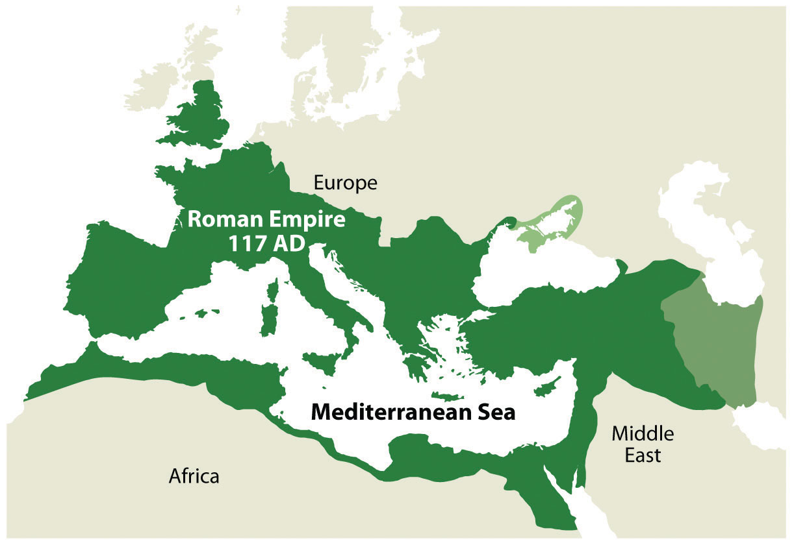Source: Image courtesy of Tataryn77 2011, http://commons.wikimedia.org/wiki/File:Roman_Empire_117AD.jpg.
The Vikings of Scandinavia (Norway, Sweden, and Denmark; 900–1200 CE) are often inaccurately referred to as rogue bands of armed warriors who pillaged and plundered northern Europe. Though they were fierce warriors in battle, they were actually farmers, skilled craftsmen, and active traders. They developed trade routes throughout the north. Using their seafaring knowledge and skills, the Vikings used Europe’s waterways for transportation. They were the early developers of the northern world from Russia to Iceland and even to North America. They developed colonies in Iceland, Greenland, and what is present-day Canada. Their longships were renowned for versatility and provided an advantage on the sea. The Vikings made advances deep into Europe—all the way to Constantinople. History indicates that the Byzantine Empire employed Scandinavian Vikings as mercenaries.
In a general sense, the regions to the west of Scandinavia—such as Iceland, Scotland, Ireland, and Greenland—were targeted by the Norwegian Vikings. Southern regions such as England and France were more often destinations of the Danish Vikings. Russia and areas of Eastern Europe were standard trading grounds for the Swedish Vikings, though the different Viking groups could occasionally be found in the same destinations. The present-day Scandinavian countries were established after the main Viking period. The Vikings connected northern Europe with trade during the Dark Ages.
It wasn’t until after the Dark Ages of Europe ended that a rebirth of ideas, technology, and progress took hold. The Renaissance of the late fifteenth century prompted activity in Europe that changed the world. In 1492, Columbus and his three ships crossed the Atlantic to land on the shores of the Americas. This event symbolized the beginning of the era of European colonialismThe creation of colonies outside the home country, usually for the exploitation of natural resources or for economic gain., which only diminished after World War II. Colonialism’s effects remain in the colonies or protectorates that European countries still possess. Colonialism was fueled by the economic concept of mercantilismEconomic principle that outlines the drive for governments to gain wealth through the control of trade, which encouraged the expansion of colonial activity in Europe during the colonial era. that included the drive of governments to control trade, promoting the acquisition of wealth by the quick gain of gold or silver from their colonies.
Colonialism included the development of colonies outside the home country, usually for the expansion of imperial power and the exploitation of material gain. The building of larger ships and an understanding of sea travel allowed an exchange of new goods and ideas between continents. North and South America were opened up to the European explorers for colonial expansion. European colonialism brought newfound wealth from the colonies back to Europe. All the regions of the world outside Europe were targeted for colonialism. Africa was divided up, “Latin” America was created, and Asia became a target for resources and trade. The few powerful countries along the Atlantic coast of Europe began the drive to dominate their world. If you live in the Western Hemisphere, consider the language you speak and the borders of your country: both were most likely products of European colonialism. Most of the current political geographic boundaries were drawn up or shaped through colonial conflict or agreement.
The post-Renaissance era introduced a number of agricultural changes that impacted European food production. Before this time, most agricultural methods were primitive and labor intensive, but new technologies were introduced that greatly enhanced agricultural production. Plows, seeders, and harvesting technologies were introduced, and land reform and land ownership transitioned to adapt to the changing times. These innovations supported the expanding port cities that created urban markets for agricultural surpluses. Colonial ships returned from the colonies with new crops such as the potato that revolutionized crop production. This era’s progress in agricultural advancements is often referred to as the agrarian revolutionPost-Renaissance agricultural transformation that introduced new technology, crops, and land reforms that greatly enhanced agricultural production in Europe.. The agrarian revolution led to the industrial developments such as the steam tractor and steel implements that further advanced agricultural production worldwide.
Great Britain, being an island country, developed the world’s largest navy and took control of the seas. Their colonial reach extended from what is now Canada to Australia. The Industrial Revolution,Late-1700s shift to coal for energy, the steam engine for power, the smelting of iron, and the concept of mass production that changed how goods were produced. initiated in northern England in the late 1700s, introduced an industrial period that changed how humans produced products. The shift to coal for energy, the use of the steam engine for power, the smelting of iron, and the concept of mass production changed how goods were produced.
Figure 2.7

Mass production during the Industrial Revolution prompted a rural-to-urban shift in the population. Coal for energy and steam for power energized industrial activities.
The development of the steam-powered engine provided a mobile power source. Waterwheels powered by steep-flowing rivers or streams were an early source of power. With coal for fuel and steam for power, the engines of industry were mobile and moved full speed ahead. Power looms converted textiles such as cotton and wool into cloth. Powered by a steam engine, a power loom could operate twenty-four hours a day and could be located anywhere. Industrialization with cheap labor and adequate raw materials brought enormous wealth to the industrial leaders and their home countries.
With the mass production of goods and advancements in technology, there was a major shift in human labor. Fewer people were needed on the farms, and more workers were needed in factories. There was a large rural-to-urban shift in the human population. Europe experienced the development of the major cities of its realm during this period. In Britain, for example, in 1800 only 9 percent of the population lived in urban areas. By 1900, some 62 percent were urban dwellers. As of 2010, it is more than 90 percent. Europe, as a whole, is about 75 percent urban. As a comparison, the US population is about 80 percent urban.
As discussed in earlier sections, the rural-to-urban shift that began with the Industrial Revolution in Europe continues today in developing countries. The Industrial Revolution, which started in northern England’s Pennine mountain chain, rippled through Europe and across the Atlantic to the United States. The majority of countries in Europe are currently in stage 5 of the index of economic development. The five stages of the index of economic development illustrate a pattern of development and population dynamics for a country or region. The model outlines how rural societies with an agrarian economy in stage 1 can make the transition to stage 5: the stage that indicates an urban society with a consumer economy. As a general trend, when a country’s levels of industrial activity and urban growth rise, the outcome is usually a higher standard of living and smaller family sizes. Additionally, rural-to-urban shift takes place, driven by the pull of opportunities and advantages in the industrializing and urbanizing areas. Countries in stage 5 of the index have small families with a fertility rate below the replacement level. Their incomes, based on a consumer economy, are generally at high levels.
As Europe industrialized and progressed through the stages of the index of economic development, certain core regions reached the postindustrial stages earlier than others. Western Europe established a core industrial region with an extended periphery. The postindustrial activity in this core area continues today in four main centers of innovation: (1) Stuttgart in southern Germany, (2) Lyon in southeastern France, (3) Milan in northern Italy, and (4) Barcelona in northeastern Spain. These four industrial centers have been referred to by some as the Four Motors of Europe because they promote business and industry for the European community. The European core region extends as far as Stockholm in the north to Barcelona in the south.
Figure 2.8 The Core Region of Europe and the Four Centers of Industrial Activity
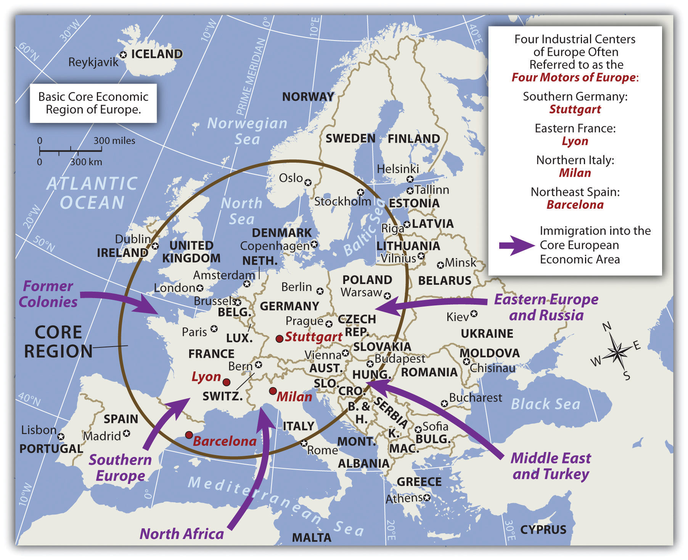Attractive “pull” forces draw immigrants to the core economic area of Europe, seeking opportunity and advantage. “Push” forces cause people to leave an area due to negative cultural or environmental forces, and/or the lack of opportunity and advantage.
European urban development centered on port cities that had industrial activity. Ships could import raw materials, the factories could manufacture the goods, and the ships could export the products. A central business district (CBD)The core area of a city with a high concentration of business and commerce that was developed in early industrial cities to provide access to labor, factories, and the market. developed around these activities. Since walking was the main transportation mode, all business activities had to be located in the same vicinity. Banks, retail shops, food markets, and residential dwellings had to be close to the factories and port facilities. Modern cities emerged from this industrialization process, and Europe is one of the more urban realms on the planet.
Many European countries have one main primary city that is more than twice as large as their second city. The term primate cityA country’s largest city that is usually twice the size of the next largest city and is exceptionally expressive of the national culture and persona. indicates a city that is more than twice as large as their second city and exceptionally expressive of national feeling and heritage. One may instinctively think that the primate city is the same as the capital city of a country; this, however, is not always the case. For example, Washington, DC, is the US capital, but New York City is the country’s primate city. Primate cities represent a country’s persona and often are symbolic of the country’s heritage and character. Though common, not all countries of the world have a primate city. Financial and business centers in cities such as London, Rome, or Paris support the industrial activity that led to their development as primate cities. Most primate cities are ports or are located on a major river.
Consider the trend that the Industrial Revolution brought to Europe. Do you remember the population growth principle? This principle states that as countries industrialize and urbanize, family size naturally goes down and incomes traditionally go up. Integrate this with the rural-to-urban shift that occurs when countries progress through the five stages of the index of economic development. By understanding these basic trends, one can determine the average family size in Europe and why it is declining.
Because Europe is an urbanized realm, one can understand why family size in Europe is small. As a matter of fact, various countries in Europe have negative population growth rates. Family size in Spain and Italy is around 1.2, with the average family size in all of Europe at 1.4 children. The replacement rate to maintain an even population-growth pattern would be a fertility rate of about 2.1 children. Small families do not provide enough young people to cover the available entry-level service jobs. Europe, the United States, and Japan are all in stage 5 of the index of economic development and are facing low or negative population growth and a deficit in their cheap labor supply. As a core economic global power, Europe has experienced an increase in immigration. With a lower fertility rate and an increase in postindustrial activity, Europe is a magnet for people from poorer peripheral countries and even peripheral regions within Europe who are looking for opportunities and advantages.
With the planet’s human population increasing overall, one might think that a smaller family size is a positive trend. It may be, but there are problems along the way. If there are fewer young people in a community—fewer children and fewer people of employment age—consider how this affects the economic situation. With a declining European population, who will apply for the entry-level jobs? Economic core areas attract immigrants seeking opportunities and advantages. Europe follows this pattern. There has been increasing tension between the long-standing European cultural groups and immigrants from developing countries who often speak non-European languages or follow religions other than Christianity. The main religion of immigrants from North Africa or the Middle East is Islam, which is the fastest-growing religion in Europe.
There are six main reasons for declining family size in Europe:
The following problems arise with the decline in family size in Europe:
The agrarian revolution and the Industrial Revolution were powerful movements that altered human activity in many ways. New innovations in food production and the manufacturing of products transformed Europe, which in turn impacted the rest of the world. Even before the agrarian revolution was under way, other transitions in European political currents were undermining the established empire mentality fueled by warfare and territorial disputes. The political revolutionTransformation of Europe was a result of diverse actions focused on ending continual warfare for the control of territory and introducing peaceful agreements that recognized sovereignty of territories ruled by representative government structures. that transformed Europe was a result of diverse actions that focused on ending continual warfare for the control of territory and introducing peaceful agreements that recognized sovereignty of territory ruled by representative government structures. Various treaties and revolutions continued to shift the power from dictators and monarchs to the general populace. The Treaty of Westphalia in 1648 and those that followed helped establish a sense of peace and stability for Central Europe, which had been dominated by the Holy Roman Empire and competing powers. The Holy Roman Empire, which was centered on the German states of Cental Europe from 962–1806, should not be confused with the Roman Empire, which was based in Rome and ended centuries earlier. The French Revolution (1789–95) was an example of the political transformation taking place across Europe to establish democratic processes for governance.
The political revolution laid the groundwork for a sense of nationalism that transformed Europe into nation-statesPolitical unit in which the people (the nation) are unified under a similar heritage or culture and are under a unified common government (the state).. The term nation refers to a homogeneous group of people with a common heritage, language, religion, or political ambition. The term state refers to the government; for example, the United States has a State Department with a secretary of state. When nations and states come together, there is a true nation-state, wherein most citizens share a common heritage and a united government.
European countries have progressed to the point where the concept of forming or remaining a nation-state is a driving force in many political sectors. To state it plainly, most Europeans, and to an extent every human, want to be a member of a nation-state, where everyone is alike and shares the same culture, heritage, and government. The result of the drive for nation-states in Europe is an Italy for Italians, a united Germany for Germans, and a France for the French, for example. The truth is that this ideal goal is difficult to come by. Though the political borders of many European countries resemble nation-states, there is too much diversity within the nations to consider the ideal of creating a nation-state a true reality.
Various ethnic populations in Europe desire their own nation-states within their countries of residence. They want to devolve or separate from the larger state. The term devolutionThe process whereby regions within a country demand autonomy at the central government’s expense. refers to the process whereby regions or people within a state demand independence and autonomy at the central government’s expense. There are now a number of cases where devolution is occurring in Europe. For example, Scotland and Wales seek to devolve from the United Kingdom. The Basque region between Spain and France would like to have its own nation-state. Former Yugoslavia broke up into seven smaller nation-states. Various other minority groups in Europe seek similar arrangements. Thus both cohesive cultural forces and divisive cultural forces are active in the European community.
Cultural forces continually apply pressure on a country. Some of these cultural forces pull the nation together (centripetal forcesCultural forces that hold or bind a political unit together.) and others pull it apart (centrifugal forcesCultural forces that divide or separate people in a political unit.). Primary sources of these cultural forces include religion, language, ethnicity, politics, and economic conditions.
Figure 2.9
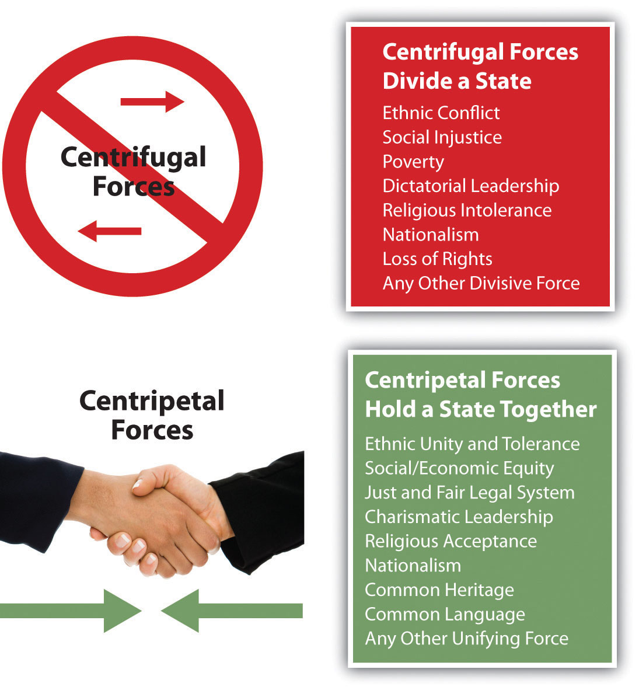Centrifugal forces divide a state and centripetal forces hold a state together.
When there is division, conflict, or confrontation, the centrifugal forces are at play. When unification, agreement, or nationalism are being exercised, centripetal forces are evident. The sources that tie a country together can also be the sources that divide a country. Ethnic unity can be a positive force, while ethnic division and conflict can be a divisive force. If centrifugal forces become strong, the result may be outright civil war, as was seen in the United States in the 1860s. Unity can also be evident through national struggles, such as the nationalism displayed immediately after the 9/11 terrorist attacks in the United States. After the attacks, an outpouring of goodwill and agreement strengthened the bonds within the United States.
To understand our world, it is helpful to understand the cultural forces that are active in any one location. Disagreement, inequity, or injustice related to the cultural factors of ethnicity, religion, language, and economics of a region or country is the cause of most conflicts. The strong personalities that provide leadership can similarly prove to be powerful forces that either divide or unite a nation. An example of cultural forces in conflict in Europe can be found in Northern Ireland, where political forces use religious differences as a means of social division.
Europe has historically been considered a Christian realm. The three main branches of Christianity in Europe are Roman Catholic, Protestant, and Eastern Orthodox. Rome has been the geographical base for the Roman Catholic Church since the Roman Empire. Operating on the Romance language, Latin, the Catholic Church has provided southern Europe with a common religion for over 1,500 years.
The Roman Catholic Church split when Constantinople, now called Istanbul, gained preeminence. The Eastern Orthodox Church launched itself as the primary organization in the Slavic lands of Eastern Europe and Russia. The reformation of the fourteenth century, led by people such as Martin Luther, brought about the Protestant Reformation and a break with the Roman Catholic Church. Protestant churches have dominated northern Europe to this day.
Table 2.1 Three Main Language Groups
| Germanic Language Group (Found Mainly in Northern Europe) | Romance Language Group (Latin Based; Found Mainly in Southern Europe) | Slavic Language Group (Found Mainly in Eastern Europe) |
|---|---|---|
| English, Dutch, German | French, Italian, Spanish | Polish, Russian, Czech |
| Danish, Norwegian, Swedish | Portuguese, Romanian, Walloon | Ukrainian, Slovak, Slovene |
| Icelandic, Faroese, Frysian | Romancsh, Catalan, Provencal | Belarussian, Serbo-Croatian, Lusatian |
| Macedonian, Bulgarian |
Figure 2.10 Three Dominant Language Groups and Three Dominant Christian Denominations of Europe
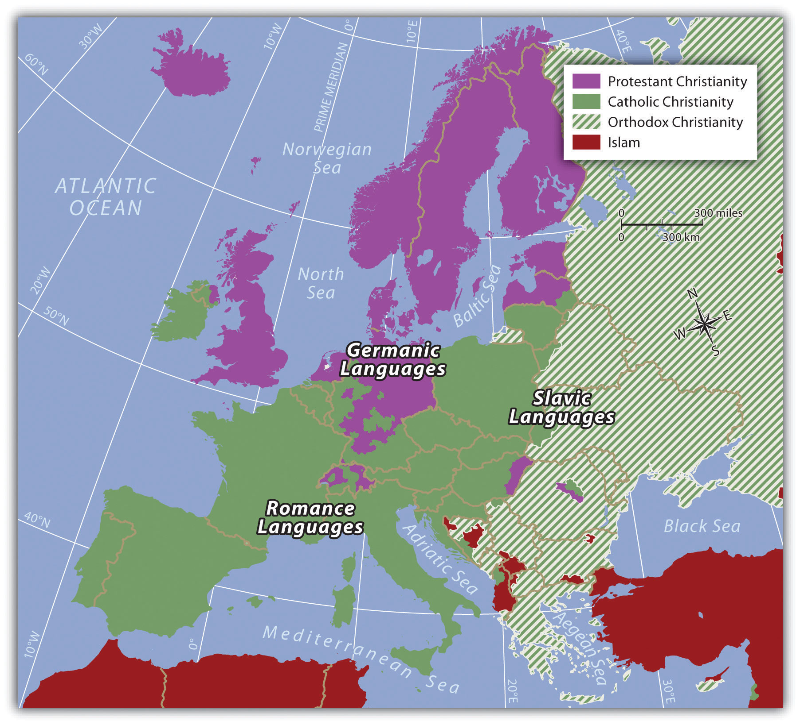Three main Indo-European language groups dominate Europe. Though there are additional language groups, the dominant three coincide with the three main religious divisions. In the east, where the Eastern Orthodox Church is dominant, the Slavic language group prevails. In the north, along with Protestant Christianity, one finds the Germanic language group. In southern Europe, where Roman Catholicism is dominant, the Romance languages are more commonly spoken.
Identify the following key places on a map:
The world economy has a competitive marketplace. Each independent country has to compete economically to earn national income, but not all countries are equal in natual or human resources. The smaller countries of Europe may have difficulty competing with the world’s core economic powers such as Japan or the United States. Some of the countries of Europe are small in terms of physical area. In fact, the state of Texas is larger in square miles than any individual European country, and Kentucky is larger in size than more than half the European countries. The total physical area of all the European countries together equals only 60 percent of the total physical area of the United States. However, in regard to Europe, physical size may not an indicator of economic ability. A number of European countries possess a high level of economic output and are major forces in the global economy.
The economic forces of globalization have motivated the nation-states of Europe to work together rather than compete with each other. Western Europe as a region is highly industrialized and has a high standard of living. Unified, the countries could be a major economic power in the world. Separately and independently, they may not be able to compete at the same level as other globally recognized trading blocs. To become unified after a century of centrifugal forces dividing them has not been easy. Consider the cultural forces that have been active in Europe. Centripetal forces unifying the realm include a common Christian religion, Indo-European language groups, and a Caucasian ethnic background. These forces have not resulted in a unified Europe. The closest resemblance to a unified Europe was the Roman Empire, which was held together by military force.
During the twentieth century, there were three major divisions in Europe, all products of centrifugal forces. First, World War I, which was supposed to be the war to end all wars, divided Europe and the industrialized world. Second, World War II pitted the Axis powers (led by Germany and Italy with Adolph Hitler leading the German contingency) against the Allied powers (led by Great Britain and France with the United States entering later). Third, after World War II, the confrontation between communism and capitalism developed into the Cold WarConflict between capitalist Western democracies and the Eastern Communist countries that developed after World War II ended and continued until the collapse of the Soviet Union in 1991. The two main powers were the United States and the Soviet Union, which did not have direct military conflicts but fought each other in third world countries.. The Iron CurtainThe physical barrier in the form of walls, barbed wire, and land mines that divided Eastern Europe and Western Europe during the Cold War., built of concrete, barbed wire, and land mines, separated Communist Eastern Europe, which was dominated by the government of the Soviet Union, from the capitalist democracies of Western Europe, which were allied with the United States. When the Soviet Union collapsed in 1991, a new era arrived in Europe, and the power of unification emerged.
After World War II ended in Europe, the three small countries of Belgium, Netherlands, and Luxembourg realized that together they would be much stronger and recover more quickly from the war than if they remained separate. Belgium had banking and business; the Netherlands had industry, farming, and the world-class port of Rotterdam on the Rhine River; and Luxembourg had agricultural resources. To help recover from World War II, in 1944 the three countries signed an economic pact called the Benelux AgreementSupranational agreement between Belgium, the Netherlands, and Luxembourg that provided an early pattern for the European Union. (after the first syllables of each country’s name), which provided a successful example of unification and cooperation.
Implemented from 1948 to 1952, US Secretary of State George Marshall’s Marshall PlanUS Secretary of State George Marshall’s post–World War II initiative to help rebuild war-torn Europe with American aid and business connections (1948–52). helped rebuild war-torn Europe with American aid and business connections. US businesses and corporations benefited from the increased international trade with Europe. But to deter the European nations from going to war again, there needed to be an economic trade policy that encouraged a strong business climate. In 1957, the more prominent countries of France, West Germany, the Netherlands, Luxembourg, Italy, and Belgium got together and signed the Treaty of Rome, which created the Common MarketA precursor to the European Union created by the Treaty of Rome to establish common institutions and implement standards for trade and commerce among them.. This agreement provided the structure necessary to unify Europe under a European Union (EU) in 1992. Despite many problems, since World War II, steady efforts have been made toward European unification. The EU was the structure for a common economic system with an agreed-upon governing body, and it was designed as an economic trading bloc that could compete with the United States and Japan. A mechanism was finally in place for a supportive, unified Europe, but it would be up to the independent countries that joined this union to make it work.
Figure 2.11 EU Members as of 2010

Figure 2.12 The European Union and the Language Question

SupranationalismThe voluntary association of three or more independent states willing to yield some measure of sovereignty for mutual benefit. is defined as the voluntary association of three or more independent states willing to yield some measure of sovereignty for mutual benefit. The Benelux Agreement of 1944 was a model for European supranationalism. Nations are often hesitant to give up any sense of independence or autonomy, especially with the strong drive toward nation-state status. It is different for the United States: though the United States is not classified as a nation-state because of its ethnic diversity, English is the only major language and the dollar is the national currency. One can drive for two thousand miles across the United States and still experience a similar cultural urban landscape, complete with the same English-language road signs, identical franchised restaurants, common chain big-box stores, and similar advertising icons. This is not the case in Europe, where each country might have its own language, currency, traffic laws, and legal system. Supranationalism and unification can be a painful process. With common standards and a common currency comes the reality that a common cultural landscape might develop. Supranationalism could erode the uniqueness of each state as Europe becomes more of a “United States of Europe.”
The search for a solution to the language problem for the European Union is a serious endeavor. One of the solutions proposed was to use the artificial language Esperanto as the international language. Needless to say, this solution did not receive much support from member states and was rejected by the EU. Esperanto, introduced in 1887 as a neutral language, was formed using words from the Latin, Germanic, and Slavic language groups (the three main language groups of Europe).
Test Your Language Ability
http://www.esperanto-usa.org/en/node/107
Inteligenta persono lernas la lingvon Esperanto rapide kaj facile. Esperanto estas la moderna, kultura lingvo por la tuta mondo. Lernu la internacian lingvon Esperanto.
Check Your Translation
An intelligent person learns the language Esperanto rapidly and easily. Esperanto is the modern, cultural language for the whole world. Learn the international language Esperanto.
Figure 2.13

The euro was adopted in 1999. However, not all EU countries use the euro.
To address the differences in the many currencies used in Europe, the EU introduced a common currency called the euro. This solution encountered resistance but has been accepted by most EU members. Great Britain is a major economic player in the EU, but it has not adopted the euro as its main currency. It has kept the traditional English pound sterling. Most of the old currencies of EU members are being phased out and the single currency of the euro has become the standard. Even countries not currently in the EU have adopted the euro as their national currency.
Unification has created economic problems between the wealthy industrialized countries and the poorer regions of southern Europe. There is disagreement over how taxes or funds will be allocated. The poorer countries would like economic assistance in developing their industries. The wealthier nations are at times resistant to sharing their wealth. Italy has experienced this problem within its borders: Italy’s wealthy northern regions have hinted at separating from their poorer southern regions. This is an age-old problem that confronts governments of most countries.
Other questions arise with the supranational EU. How will the EU manage foreign affairs? Will the EU have a military? If so, how will it be managed? Who will command it? What will happen to the current military assets of each member country? Travel within the EU has also changed. Before the EU, people traveling between European countries encountered border checks at which their passports were checked and stamped, and different traffic laws existed for each country. This is changing. Once inside the EU, there are no more border stops, and traffic and travel are becoming streamlined with common laws, making travel between member nations similar to travel between US states.
Figure 2.14 The European Union and the Foreign Policy Issue

NATO is the North Atlantic Treaty Organization (Western Europe and North America).
Global trading blocs such as the EU are not uncommon. The United States, with Mexico and Canada, developed the North American Free Trade Agreement (NAFTA) to create a global economic trading bloc. Japan and neighboring countries work together as the East Asian Community (EAC), which is not an official organization but is a recognized entity that operates as an economic core area with its own alliances. Other larger or smaller economic trading blocs exist across the globe. Every continent has organizations that promote economic development for their regions or countries. Many of these agreements have developed into a type of economic supranationalism.
European countries have to confront both the centrifugal forces that rally their nations to remain uniquely independent and the centripetal forces that call for integration into the EU, which results in the loss of some of their autonomy. European cultures have a history of struggling to retain their heritage and traditions. The strong devolutionary forces that advocate for nation-state status are challenged by the need to belong to a larger union for economic survival. Europeans are caught between holding on to cultural heritage and moving forward economically in a competitive global economy. Similar forces are also felt in other regions of the world.
Germany, which united its western and eastern regions after the Iron Curtain came down, has climbed to the top of the economic ladder in Europe. Germany is also the largest country in Europe by population. Other EU nations are concerned that Germany might once again dominate their realms or bring about massive division in Europe. The Cold War, World War I, and World War II are not easily forgotten; they are vital events in European history that affected the whole world. Many Europeans are suspect of what the EU may evolve into. Others welcome a more open European community.
According to the 1993 Copenhagen European Council, “a country has to meet certain requirements to join the EU. These requirements include a stable democracy which respects human rights and the rule of law; a functioning market economy capable of competition within the EU; and the acceptance of the obligations of membership, including EU law. Evaluation of a country’s fulfillment of the criteria is the responsibility of the European Council.”“European Union,” Translation Directory, accessed September 13, 2011, http://www.translationdirectory.com/articles/article1627.php.
In 2010, the EU had twenty-seven member states representing almost five hundred million people. A number of additional states are applying for membership, so the number of EU member states continues to change. In 2010, there were twenty-three official EU business languages. Each EU state now has its own military for national defense. A majority of EU members also hold membership in the North Atlantic Treaty Organization (NATO), which is a political alliance between Western European countries, Canada, and the United States. The EU is one of many global supranational entities. Such economic and political associations have increased across the globe. Every continent has its own array of national agreements between countries that are designed to provide greater opportunities and advantages for its members. Competition for labor and resources drives the need for smaller countries to join to compete economically in the global marketplace. The EU is in the driver of one of the three main core economic areas of the world: North America, Western Europe, and Eastern Asia.
Figure 2.15 Global Groups with the Big Three Core Areas of North America, Western Europe, and Eastern Asia

Europe has experienced strong centripetal and centrifugal forces throughout its history. From the Roman Empire to the European Union, the historical pattern of development in Europe is a model study in regional geography. From empire to nation-state and now to a union, the continent struggles to confront these cultural forces that unite and divide. The EU is an example of what supranationalism can produce. To compete in a global economy, the nation-states of Europe must cooperate and coordinate their industrial activities to support their high standard of living. The EU member states are a part of the elite “have” nations of the world. They face many questions about their future, and they will be watched closely by the rest of the world.
Europe has been traditionally divided into regions based on location according to the four points of the compass: Eastern Europe, southern Europe, Western Europe, and northern Europe. The British Isles are often considered a separate region but can be included as a part of Western Europe. These regions are purely geographical regions that may share similar physical geography or cultural traits based on physical geographical demands. For historical political purposes, Europe is divided into the two regions of Western Europe and Eastern Europe. In this case, the region of Western Europe includes the regions of northern Europe, southern Europe, Central Europe, and the British Isles. Eastern Europe is everything east of Germany, Austria, and Italy. These regional labels are used more for identification than for regional analysis. They serve as traditional labels of geographic location.
Figure 2.16 Traditional Regions of Europe

The traditional regions of Europe are not as relevant today as they have been historically with the creation of the European Union (EU). Economic and political relationships are more integrated than they were in past eras when nation-states and empires were more significant. Economic conditions have often superseded cultural factors and have intensified the need for increased integration. Cultural forces have traditionally supported nationalistic movements that work to preserve the culture, heritage, and traditions of a people. Regional cultural differences remain the social fabric of local communities that support the retention of their identity. Modern transportation and communication technology has brought this cornucopia of European identities into one single sphere of global recognition.
Europe has many different cultural identities within its continent. Northern Europe has traditionally included Iceland, Finland, and the three Scandinavian countries of Norway, Sweden, and Denmark. These countries are often referred to as the Nordic countries. All these countries were influenced by Viking heritage and expansion. Their capital cities are also major ports, and the largest cities of each country are their primate cities. The languages of the three Scandinavian countries are from the Germanic language group and are mutually intelligible. Finnish is not an Indo-European language but is instead from the Uralic language family. Most of Iceland’s inhabitants are descendents of Scandinavian Vikings. Protestant Christianity has prevailed in northern Europe since about 1000 CE. The Lutheran Church has traditionally been the state church until recent years. These countries were kingdoms, and their royal families remain highly regarded members of society. The colder northern climate has helped shape the cultural activities and the winter sports that are part of the region’s heritage. Peripheral isolation from the rest of Europe because of their northern location and dividing bodies of water have allowed the northern culture to be preserved for centuries and shape the societies that now exist in northern Europe.
Figure 2.17 Port in Stockholm, Sweden

Source: Photo courtesy of Condor Patagónico, http://commons.wikimedia.org/wiki/File:Stockholm_Port.jpg.
Human rights, education, and social concerns are high priorities of the governments of northern Europe, and the quality of these elements rank highly by global comparisons. Standards of living are among the highest in Europe. Isolation in northern Europe does create an element of economic cost, and transportation technology has been leveraged to address this. A modern bridge has been constructed across the Baltic Sea from Denmark to Sweden to increase the flow of people, goods, and materials between the Scandinavian Peninsula and mainland Europe. Iceland is the most remote of the Nordic countries. Its small population—less than a half million people—is connected to Europe by sea and air transportation and communication technologies. Almost all elementary school children in the Nordic countries are taught English as a second language. Fish, meat, and potatoes are traditional dietary staples; fish in particular has been an important food source. The cuisine of the region is not noted for being spicy. Northern Europe has worked diligently to integrate itself with the global community and yet maintain its cultural identity.
As a standard practice, the northern European countries have exploited the opportunities and advantages of their natural resources to expand their economies. Sweden, northern Europe’s largest country, has used its natural iron ore supply to develop its manufacturing sector. Sweden was the production base of Saab and Volvo vehicles as well as other high-tech products; however, GM purchased the Saab auto division in 2000 and some of its automobiles were manufactured in Mexico. In 2010, Saab was sold back to European investors and production resumed in Sweden. Volvo Car Corporation was purchased by Ford Motor Corporation in 1999 and then acquired by a Chinese automaker in 2010.
Finland has vast timber resources and is one of Europe’s major sources of processed lumber. It was the original manufacturer of Nokia cell phones, an example of its technological advancements. Nokia is the largest manufacturer of mobile phones in the world and has production facilities in eight different countries.
Norway has been benefiting from the enormous oil and natural gas reserves under the North Sea. Fishing and modest agricultural activities had been Norway’s traditional means of gaining wealth, but now it is the export of the much-in-demand energy resources. Because of its economic and energy independence, Norway has opted not to join the EU.
Vikings were masters of the seas and colonized Greenland, which is located next to Canada and is considered to be the world’s largest island. Danish colonization in the eighteenth century included Greenland and the Faeroe Islands, which are located between Scotland and Iceland. Both are now under the government of Denmark but retain a high level of self-rule and autonomy, which has aided them in holding on to their cultural identity. Greenland has also opted not to become a part of the EU even though Denmark is a member. Greenland only had a population of about 57,670 in 2011, and 80 percent of its surface is covered with ice. Fish is Greenland’s main export, but minerals, diamonds, and gold are also present in viable amounts.
Denmark has a consumer economy with a high standard of living. This Scandinavian country is often ranked as the least corrupt country in the world and has the happiest people. The country has supported a positive environment and implemented strong measures to protect its natural areas. Denmark’s main exports are food products and energy. The country has sizeable oil resources in the North Sea but also receives over 15 percent of its electricity from wind turbines.
The Baltic states of Lithuania, Latvia, and Estonia have often been included in the northern European designation because of their northern location. Estonia has the strongest similarities in religion, traditions, and culture, and geographic literature often has included it as a part of northern Europe. The Baltic states have been associated with Eastern Europe through the Soviet era but, like their neighbors to the north, are becoming more economically integrated with Western Europe.
Northern Europe is a peripheral region. Southern Sweden has an advanced industrial base and resembles a core area. Sweden’s northern portion and the main parts of the other Nordic countries act as sources of raw materials for Europe’s urban core industrial region. In the core-peripheral spatial relationship, northern Europe most resembles a semiperipheral region that has attributes of both the urban core and the rural periphery.
Norway, Sweden, and Finland are quite large in area but are not densely populated compared with other European nations. Sweden ranks as the fourth-largest European country in physical area. Sweden is larger than the US state of California, but in the 2010 census, it had less than ten million people. In 2010, Finland, Norway, and Denmark all had less than six million people each.
The cultures and societies of northern Europe have progressed along similar paths; that is, they have advanced from once Viking-dominated lands into modern democratic and socially mature nations. Northern Europe is known for its concern for the social welfare of its citizens. Their strong egalitarian ideals have contributed to extensive advancements in free medical care, free education, and free social services for all, regardless of nationality or minority status. Civil rights for minorities, women, and other groups is assured and protected. Denmark doesn’t have a legal age for consumption of alcoholic beverages, though tradition sets the age at about fourteen. Culture and the arts are well developed; examples include everything from the Nobel Peace Prize to Hans Christian Anderson to the 1970s chart-topping pop group ABBA. Sweden has become a major exporter of music worldwide. Rock, hip-hop, and pop music are common genres. With English as a widely spoken language in Scandinavia, music and cultural trends have a larger export market in places such as the United States and Britain.
Southern Europe includes three large peninsulas that extend into the Mediterranean Sea and the Atlantic Ocean. The Iberian Peninsula consists of Spain and Portugal. The Pyrenees mountain range separates the Iberian Peninsula from France. Greece, the most southern country on the Balkan Peninsula, includes hundreds of surrounding islands and the large island of Crete. The Italian Peninsula is the shape of a boot with the Apennine Mountains running down its center. Italy also includes the islands of Sicily and Sardinia. Technically, the island country of Cyprus is also included in southern Europe. There are five ministates in this region. The small island of Malta is located to the south of Sicily and is an independent country. Monaco, San Marino, Andorra, and Vatican City are also independent states located within the region. Southern Europe’s type C climate, moderated by the water that surrounds it, is often referred to as a Mediterranean climate, which has mild, wet winters and hot, dry summers.
Rural-to-urban shift in southern Europe has not been as strong as that of Western Europe. Only about 50 percent of the people in Portugal are urban; in Spain and Greece, about 60 percent are urban.
Italy is more representative of Europe, with about 68 percent of the population urbanized. Italy is also divided, with northern Italy being more industrialized than southern Italy. The southern regions of Italy, including the island of Sicily, are more rural with fewer industries. Northern Italy has the metropolitan city of Milan as an anchor for its global industrial and financial sector in the Lombardy region, which includes the city of Turin and the port of Genoa. This northern region of Italy has the economic muscle to be one of Europe’s leading manufacturing centers. The so-called Ancona LineAn imaginary line that cuts across Italy from Rome to Ancona and divides Italy into northern Italy and southern Italy. can be drawn across the middle of Italy from Ancona on the east coast to Rome on the west coast to separate the industrial north with the more agrarian south. The north also has the noted cultural cities of Venice, Florence, and Pisa.
A similar situation exists in Spain. The urbanized Catalonia region around Barcelona in the northeast has high-tech industries and a high standard of living. Southern Spain has large rural areas with economies heavily based on agricultural production. Portugal and Greece are not as industrialized and do not have the same economic opportunities. Historically, southern Europe, Portugal, and Greece in particular each have had a much lower gross domestic product (GDP) per capita than northern or Central Europe. Their economies have been much more aligned with the economic periphery than with the industrial core region of Europe. Greece has had serious economic difficulty in the past few years.
Southern European countries have much larger populations than their northern European counterparts. Italy has about sixty million people in an area smaller than Norway, which has less than five million. Spain has about forty million; both Portugal and Greece have more than ten million. Cultural factors are also different here than in northern Europe. The culture of southern Europe has been built around agriculture. Traditional cuisine is based on locally grown fresh food and wine. Olive oil and wine have been major agricultural exports. The main languages of Iberia and Italy are based on the Romance language group, and Greek is an independent branch of the Indo-European language family. The most dominant religious affiliation in the south is Roman Catholicism, except in Greece, where the Eastern (Greek) Orthodox Church is prominent.
Figure 2.18 Spain’s Autonomous Communities

Because of its diversity, Spain is not categorized as a nation-state.
Spain is the most diverse nation in southern Europe with a number of distinct ethnic groups. The Basques in the north along the French border would like to separate and create their own nation-state. The region of Galicia in northwest Spain is an autonomous region and was once a kingdom unto itself. There are many other autonomous communities in Spain, each with its own distinct heritage and culture. Farther east in the Mediterranean is the island state of Cyprus, which is divided by Greek and Turkish ethnic groups. The southern part of the island is dominated by Greek heritage and culture, and the northern part of the island is dominated by Turkish culture and traditions. Islam is the main religion of the Turkish north. The people of southern Europe are diverse and hold to many different traditions but are tied together by the sea and the land, which create similar lifestyles and economic activities.
Italy has a population of about sixty million people, with about 68 percent living in cities. Italian culture balances the food and lifestyle of the rural countryside with the history and heritage of the cities. Cultural regions such as Tuscany, along the northwest coast, or Sicily, the island to the south, evoke thoughts of Italian heritage and culture. The large cities of Italy each have their own draw and persona that emulates the nation’s heritage and history. Italy has four cities with population estimates of over one million people each, and a number of others are major cultural centers. The metropolitan areas around these cities can be extensive.
Table 2.2 Major Italian Cities
| Rank by Population | Population Estimate |
|---|---|
| 1. Rome (capital) | 3.357 million |
| 2. Milan | 2.962 million |
| 3. Naples | 2.27 million |
| 4. Turin (Torino) | 1.662 million |
| 5. Palermo | 872,000 |
| 8. Florence | 381,762 |
| 13. Venice | 297,743 |
| Population is for city only and not for metropolitan area. | |
Rome, Italy’s capital and its largest city, was at the center of the Roman Empire and has a significant historical connection to the culture and heritage of Italy. Rome is also home to Vatican City, which holds a separate political identity. The Vatican City is home to the pope, who is the head of the Roman Catholic Church. Rome provides a historical and political center for the nation of Italy and is located along the Ancona Line, which distinguishes northern Italy from southern Italy.
The northern city of Milan is a core industrial center for the nation and for Europe. With a large metropolitan area, the city of Milan has a long history as a center of industry and power. The city continues to hold its powerful status and has expanded its international reach into the world of high-end fashion and the arts.
Naples is located along the west coast to the south of Rome. Founded by the Greeks as a colony, Naples was transferred to the Roman Empire. This historic city is home to many artistic, musical, and cultural activities that emulate the heritage of the Italian people from the time of the Renaissance.
Figure 2.19

The central part of the city of Naples, Italy, is a UNESCO World Heritage Site. Italy is densely populated with many historical cities emulating the culture and traditions of each part of the country.
Source: Photo courtesy of Inviaggiocommons, http://commons.wikimedia.org/wiki/File:Via_Toledo1.jpg.
The industrial city of Turin (Torino) is located in northwest Italy in the Alpine region on the banks of the Po River. Turin is second only to Milan in its industrial capacity within Italy. Automobile manufacturing as well as prestigious universities, art galleries, and cultural centers can be found here. The hosting of the 2006 Winter Olympics gave witness to Turin’s capacity and success.
Palermo is located on the island of Sicily. Founded by the Phoenicians, this city became the capital of the kingdom of Sicily. Palermo is the center of culture and cuisine for Sicily and has been a destination for tourists from around the world. Italy’s mild Mediterranean climate has enhanced tourism opportunities for many Italian cities such as Palermo.
Florence and Venice each have their own unique characteristics. Traditionally, Florence has been a city of commerce, trade, and the arts. Located in the Tuscany region, it is often referred to as the birthplace of the Renaissance. Florence is a UNESCO World Heritage Site and is noted for its art and architecture. Venice is located on the northeast coast of Italy at the edge of the Adriatic Sea. The city was a powerful trade and commerce center in the Middle Ages and during the Renaissance. Often referred to with romantic overtones, the city is built on 117 small islands using canals as streets. The uniqueness of the landscape, arts, food, and architecture make this city one of the major tourist destinations in Italy.
In the regional sense of location, when discussing the political geography of the European continent, the specific states located in the western part of the European mainland are often referred to as Central Europe. The term Western Europe is also applicable to this region when discussing regional variations within the realm outside of Eastern Europe. Germany and France are the two dominant states, with Belgium, the Netherlands, and Luxembourg making up the Benelux countries. Switzerland and Austria border the Alpine region. The ministate of Liechtenstein is located on the border between Switzerland and Austria. France is the only country with coastlines on both the Atlantic Ocean and the Mediterranean. These countries are located in the core economic region of Europe and have stable democratic governments and a relatively high standard of living by world comparisons.
Central Europe is a powerhouse of global economics. The Rhine River is a pathway for industrial activity from southern Germany to Europe’s busiest port of Rotterdam in the Netherlands. Western France has the political capital of the EU along the Rhine at Strasbourg. To the south is France’s second-largest city, Lyon, which is a major industrial center for modern technology. Germany had the historical Ruhr industrial complex along the Rhine that supported the high-tech industries in southern Germany in the cities of Stuttgart, Mannheim, and Munich. Germany is the most populous country in Europe, with over eighty-two million people in 2010. Germany is also Europe’s largest economy and has the largest GDP overall as a country. Belgium has major business centers in Brussels and Antwerp. Switzerland is noted for its banking and financial markets. Luxembourg has one of the highest GDP per capita in all of Europe. Austria is noted for its high level of cultural activities in Vienna and Salzburg. All these countries complement each other in creating one of the dominant economic core areas in the world.
In the first half of the twentieth century, the political geography of Central Europe was not conducive to the high level of economic cooperation that now exists. In World War Iand World War II, Germany and France were on opposite sides, and the Benelux countries were caught in middle. The cultural differences between the Germans and the French start with the differences in language and religious affiliation. Germany was divided after World War II into East Germany and West Germany, separated by the so-called Iron CurtainThe physical barrier in the form of walls, barbed wire, or land mines that divided Eastern Europe and Western Europe during the Cold War.. East Germany was under a Communist government, and West Germany was a capitalist democracy. They were reunited in 1990 when the Iron Curtain and the Berlin Wall came down. The two countries merged under one government. Europe is gradually being united economically, but each country or region still retains its cultural uniqueness.
The Benelux countries have a great deal in common historically. Before the economic union that created the term Benelux, these countries were collectively referred to as the Low Countries, so called because of their relative position to sea level. The Benelux countries are some of the most densely populated countries. They have managed to work together toward a common economic objective in spite of their cultural differences.
The capital and largest city in Belgium is Brussels, with the other urban areas being the ports of Antwerp and Ghent. Belgium is split into three large geographic areas. The dominant language in the northern region of Flanders is Dutch (Flemish), and the people are known as Flemings. In the southern region of Wallonia, most people speak French and are known as Walloons. German is the third official language and is spoken along the eastern border.
When the Industrial Revolution diffused across the English Channel and arrived in Europe, Belgium was one of the early countries to adapt to the technological developments. Belgium remains heavily industrialized and is a major exporter of products, including finished diamonds, food products, nonferrous metals, technology, petroleum products, and plastics. In general, Belgium imports the raw materials to manufacture these goods for export. Belgium also has a significant services sector. The services sector, including real estate, hotels, restaurants, and entertainment, thrives in part because Brussels is the headquarters of the North Atlantic Treaty Organization (NATO) and components of the EU. Many countries and organizations maintain offices in Brussels to have easy access to these headquarters; therefore, Brussels is the temporary home to many diplomats and foreign business people.
Figure 2.21

Brussels is connected to other European cities through high-speed rail networks.
Source: Photo courtesy of Clicgauche, http://commons.wikimedia.org/wiki/File:Ice_bruxelles.JPG.
The European country of the Netherlands also includes the colonies of the Netherlands Antilles in the Caribbean. The Netherlands, sometimes called Holland, is actually the name of two provinces (North Holland and South Holland) in the northwest part of the country. The largest city is Amsterdam. The Hague is the seat of government and is home to the United Nations International Court of Justice. Rotterdam is located at the mouth of the Rhine River and is one of the busiest ports on the continent. The country is famous for its Zuider ZeeThe area enclosed by the most famous artificial sea wall or levee in the Netherlands that restricts the North Sea., which is the large inland region below sea level that has been drained of water and surrounded with an extensive dike protecting it from the North Sea. Reclaiming land from the sea in areas called poldersDry land reclaimed from the sea in the Netherlands. has provided this densely populated country with more land area for its people to expand their activities.
For a small country with few natural resources, the Netherlands has an impressive GDP. The Dutch have made good use of their location on the North Sea and of the location of several large navigable rivers. This has facilitated voluminous exports to the inland parts of Europe. The major industries include food processing, chemicals, petroleum refining, and electrical machinery. The Netherlands is a top exporter of agricultural products, which contribute substantially to its economy. Dutch agricultural exports consist of fresh-cut plants, flowers, and bulbs as well as tomatoes, peppers, and cucumbers.
The main languages spoken in the small landlocked country of Luxemburg are French, German, and Luxembourgish. Luxembourg’s one major city is Luxembourg City. Luxemburg has an enviable economic situation with a stable and prosperous economy, low unemployment, and low inflation. Thanks to rich iron-ore deposits, this country was able to develop a very robust steel industry, which was the cornerstone of the nation’s prosperity until the 1970s. As steel declined, Luxemburg remade itself as an important world financial center. Luxembourg leads Europe as the center for private banking and insurance industries and is second only to the United States in terms of being an investment fund center.
France covers 211,209 square miles and is the second-largest European country; Ukraine is slightly larger in physical area. The physical landscapes of France vary widely from the northern low-lying coastal plains to the Alpine ranges of the east. Mont Blanc, the highest mountain in the Alpine range at 15,782 feet, is located in France near the Italian border. In the far south, the Pyrenees run along the border with Spain. The south-central region of the country is home to the Massif Central, which is a plateau and highland region made up of a large stretch of extinct volcanoes.
During the colonial era, France was a major naval power and held colonies around the world. The French Empire was the second largest at the time. The French language is still used for diplomacy in many countries. Though the French Empire no longer exists, France has progressed into a postindustrial country with one of the most developed economies in the world. It is a major player in European affairs, the EU, and the United Nations (UN). France is a democratic republic that boasts a high-quality public education system and long life expectancies.
Figure 2.22

The Eiffel Tower, a symbol of the primate city of Paris, was built in 1889. The city of Paris started as a citadel on an island in the middle of the Seine River.
Source: Photo courtesy of the Library of Congress.
In 2010, France’s population was about sixty-five million, with about ten million living in France’s primate city of Paris. The city of Paris is on an excellent site, it is favorably situated with regard to its surrounding area. It is a major core area of France serving a large peripheral region of the country. The next largest city of Lyon, which is a major high-tech industrial center for Europe’s economy, can only boast a population of about 1.4 million. Even with a large population, the country is able to produce enough food for its domestic needs and for export profits. France leads Europe in agricultural production.
France enjoys a robust economy and is one of the world’s leading industrial producers. Its industrial pursuits are diverse, including the manufacture of planes, trains, and automobiles, as well as textiles, telecommunications, food products, pharmaceuticals, construction and civil engineering, chemicals, and mechanical equipment and machine tools. Additionally, defense-related industries make up a significant sector of the economy. France’s production of military weapons is recognized worldwide. The country has been a leader in the use of nuclear energy to produce electricity. Nuclear energy supplies about 80 percent of the country’s electricity, which reduces the need for fossil fuels and imported oil.
Agriculture is an important sector of the French economy, as it has been for centuries, and is tied to industry through food processing. Food processing industries employ more people than any other part of the French manufacturing sector. If you think of cheese and wine when you think of France, you have identified two of its largest food processing endeavors, along with sugar beets, meats, and confectionaries. World-renowned wines are produced in abundance, sometimes in areas that bear their names, such as in Burgundy, around the city of Bordeaux, and in Champagne in the Loire Valley. French cuisine and fashion have long been held in highest esteem worldwide and are a source of national pride. Food and wine are important elements of the French way of life, and each region of France boasts a suite of famous dishes.
Thanks to the climate and favorable soil conditions, agriculture is highly productive and lucrative for France. France is second only to the United States in terms of agricultural exports. Exports mainly go to other EU countries, to the United States, and to some countries in Africa. The plains of northern France are excellent for wheat, which is grown on vast agricultural operations. Dairy products are a specialty in the western regions of France, which also produce pork, poultry, and apples. Beef cattle are raised in the central portion, where a cooler, wetter climate provides ample tracts of grasslands for grazing. Fruit, including wine grapes, is grown in the central and southern regions, as are vegetables. The region around the Mediterranean is blessed with hot, dry weather ideal for growing grapes and other fruits and vegetables.
French governments have been challenged by the country’s high unemployment rates. In response to decades of high unemployment, the French government has, over time, introduced legislation to try to distribute available work more evenly among the population. Long periods of unemployment and underemployment put France at risk of developing a permanent underclass, along with the social ills, including crime and political unrest, that come with it. The unemployment rate continues to be higher for women, and women tend to have lower-paying jobs. Additionally, women are underrepresented in government. France has a significant immigrant population, which means that, as in many countries with newcomers, the settlement and integration of new arrivals is an issue. Some have blamed the high youth crime rate not just on unemployment but on governmental failure to fully integrate immigrants into French society.
Another demographic matter is a strong rural-to-urban shift. As people move to the cities, rural areas are significantly depopulated. Though more than seventy languages are spoken in France due to its large immigrant population, French has been recognized as the official language by law. Eighty percent of French people identify themselves as Roman Catholics, though the percentage of practicing Catholics is much lower and declining. Approximately one-third of Europe’s Jewish population resides in France. About 5 percent of the population self-identifies with Islam, which is a growing population because of immigrants from North Africa, some of whom are Muslim and tend to have larger families. Most of these immigrants target the urban areas in search of employment and opportunity.
In 1995, France experienced three terrorist attacks, which killed eight people and wounded more than a hundred. The attacks were, of course, troubling, but the real issue before France is how to ensure that it does not become a breeding ground for Islamic extremists bent on terrorist activity. The situation of unemployed, disenfranchised youth can provide the perfect setting from which to attract new terrorist recruits. After decades of dealing with this type of unrest, France passed laws in response to the 1995 Islamic terrorist bombings that some civil libertarians found unsettling. Many forms of surveillance are legal and routine, including forms of surveillance that violate private communications. France also passed a law prohibiting “association with wrong-doers involved in a terrorist enterprise.” This gives French authorities the right to arrest, detain, try, and convict anyone suspected of any crime that might be even remotely related to terrorist activity. Balancing civil liberties with the quashing of terrorist plans has become a constant challenge for many countries, including France.
Germany’s location in Central Europe has meant that throughout history many peoples—all with their own cultures, ideas, languages and traditions—have traversed Germany at one time or another. Thus Germany’s culture has received many influences over the centuries.
Germany’s present geopolitical configuration is quite young, as it reunified the eastern and western portions into a single entity in 1990. Germany was formed in 1871 during the leadership of Otto von Bismarck in an attempt to create a Germanic power base. World War I was fought during the last years of the German Empire. Germany, as part of the Central powers (Germany, Austria-Hungary, and Bulgaria), was defeated by the Allies with much loss of life. The German Republic was created in 1918 when, having been defeated in World War I, Germany was forced to sign the Treaty of Versailles.
In 1933, with an environment of poverty, disenfranchisement of the people, and great instability in the government, Germany gave way to the appointment of Adolf Hitler as chancellor of Germany. Within a mouth of taking office, Hitler suspended normal rights and freedoms and assumed absolute power. A centralized totalitarian state quickly resulted. In a move to expand Germany, Hitler started to expand its borders. Germany’s invasion of Poland in 1939 kicked off what would become World War II. In 1941, Germany invaded the Soviet Union and declared war on the United States. After Germany’s defeat, the country was divided into East Germany, controlled by the Soviet Union, and West Germany, controlled by the Allied powers. The Iron Curtain divided the two Germanys, with the Berlin Wall dividing the city of Berlin. The Iron Curtain and the Berlin Wall were major symbols of the Cold War. In 1989, the Berlin Wall came down, and the two Germanys were reunited in 1990. Today, Germany is a vibrant country and an active EU member.
Figure 2.23 President Ronald Reagan Speaking at the Brandenburg Gate, Germany, June 12, 1987

From this speech comes his famous quote, “Mr. Gorbachev, tear down this wall.”
Source: Photo courtesy of Ronald Reagan Presidential Library, http://commons.wikimedia.org/wiki/File:ReaganBerlinWall.jpg.
Germany is Europe’s largest economy, with strong exports of manufactured goods. To gain national income, Germany has promoted manufacturing as a major component of its economy. Most exports are in automobiles, machinery, metals, and chemical goods. Germany has positioned itself strategically to take economic advantage of the growing global awareness of environmental issues and problems by focusing on improvements and manufacturing of wind turbines and solar power technology. The service sector also contributes heavily to the economy. Deutsche Bank holds the enviable position of being one of the most profitable companies on the Fortune 500 list. Germany is also a major tourist destination. The Black Forest, Bavaria, the Alpine south, a variety of medieval castles, national parks, and a vibrant assortment of festivals such as Oktoberfest attract millions of tourists to Germany every year.
German reunification in 1990 posed some challenges for the economy. Notably, the East German infrastructure was far behind that of the West. In an effort to update transportation systems, telecommunications, and other areas needed to support industry and commerce, enormous amounts of money had to be poured into the system. While there has been considerable success in the renewal of infrastructure, unemployment in former East Germany is still significantly higher, and the necessary retraining of the workforce is ongoing and expensive.
Language, religion, and education have been strong cultural forces in Germany. German is the official language of the country and the one spoken by most of its people. More than 60 percent of Germans self-identify as Christian, and another 30 percent self-identify as agnostic or atheistic. During the Cold War, East Germany was under a Communist government that promoted a nonreligious ideology, resulting in a high percentage of people with agnostic or atheistic beliefs in that part of Germany. Historically, there has been a strong connection between the religious reformation and education. The early leaders of the Christian Reformation were generally highly educated themselves and were strong advocates of education, which they viewed as a path to positive moral and social reform. The German tradition of excellence in education continues. Education is provided at no cost (other than taxation) to students at all levels, including the university level, though some universities are now starting to charge very modest amounts for tuition.
Landlocked in the center of Europe are the two main states of Switzerland and Austria. Sandwiched on the border of these two states is the ministate of Lichtenstein. This region is dominated by the Alpine ranges. Switzerland, officially known as the Swiss Confederation, is divided into twenty-six cantons (states). Because of its location and close ties with neighboring countries, four languages are spoken in Switzerland: German, French, Italian, and Romansh. Typically, one language predominates in any given canton. Berne is the country’s capital, and Geneva, Zurich, and Basel are the other major cities. As of 2010, Switzerland’s population was about 7.8 million. Its land area is just slightly larger than the US state of Maryland.
Internationally, Switzerland is well known for its political neutrality. The UN European offices are located there. The Red Cross and the main offices of many international organizations are located in Switzerland. Switzerland joined the UN in 2002 and has applied for EU membership. Swiss culture is thought to have benefited from Switzerland’s neutrality. During times of war and political turmoil, creative people found refuge within the Swiss borders. Swiss banking practices and policies are known throughout the world, and Swiss banks have benefited greatly from the country’s politically neutral status. Banking is one of the country’s top employers and sources of income. The Swiss people enjoy a high standard of living.
Sports are popular in Switzerland and football, or soccer, is popular as it is in much of Europe. Switzerland has also produced excellence in hockey, skiing, and of late, tennis. There is an emphasis on science in Swiss culture with good historical reason: the field of modern chemistry originated in Switzerland. The Bernoulli family, famed for their significant contributions to mathematics over many years, hails from Basel. The Federal Institute of Technology in Zürich, one of the top-ranked universities in the world, has produced an unusually high number of Nobel Prize winners. Albert Einstein, though born in Germany, relocated to Switzerland and later became a Swiss citizen.
Figure 2.24 Einspaenner Coffee

A Viennese specialty, it is a strong black coffee served in a glass and topped with whipped cream; it comes with powdered sugar, which is served separately.
Source: Photo courtesy of Lachlan Hardy, http://www.flickr.com/photos/lachlanhardy/146178586.
Austria is larger than its neighbor Switzerland and is similar in area to the US state of South Carolina. In 2010, the population was estimated at 8.4 million. Austria has various Alpine ranges, with the highest peak at 12,457 feet in elevation. Only about a fourth of the land area is considered low lying for habitation. The Danube River flows through the country, including the capital city of Vienna. Austria has a well-developed social market economy and a high standard of living.
For more than six hundred years, beginning just before the dawn of the fourteenth century, Austria was tightly associated with its ruling dynasty, the Habsburgs. The Hapsburgs came to power in a new way with the formation of the Austrian Empire in 1804. In Germany’s rise to power before World War II, Hitler annexed his native Austria to Germany. Austria regained its independence a decade after the war ended and joined the EU in 1995. Austria is a German-speaking country, and nearly the entire population self-identifies as ethnic Austrian.
Austria is predominantly Roman Catholic and was home to many monasteries in the Middle Ages, influencing a strong Austrian literary tradition. Austria’s best-known cities are its capital of Vienna and Salzburg and Innsbruck. Vienna was the center of the Habsburg and Austrian Empires and earned a place as one of the world’s great cities. It is famed for its baroque architecture; its music, particularly waltzes; and theater. The Habsburgs were great patrons of the arts, and hence music, drama, and art thrived for centuries in Austria. The country has been home to many famous composers and musicians and is the setting for the story behind the movie The Sound of Music. Austria has a worldwide reputation in music and the arts.
The British Isles are an archipelago (group of islands) separated from the European mainland by the English Channel. The British Isles are often included in the region of Western Europe when discussing political geography; however, the fact that they are separated from the mainland of Europe by water provides them with a separate identity. The British Isles consists of two separate, independent countries: the Republic of Ireland and Great Britain. The United Kingdom (UK) of Great Britain consists of the regions of England, Scotland, Wales, and Northern Ireland. All four regions are now under the UK government. The Republic of Ireland is independent of the United Kingdom and does not include Northern Ireland. The primate city and UK capital is London, which is a financial center for Europe. The capital city of the Republic of Ireland is Dublin.
Figure 2.25 London on the Thames River

Source: Photo by R. Berglee.
Influenced by the Gulf Stream, the climate of the British Isles is moderate, in spite of its northern latitude location. The UK and Ireland are located above the fiftieth degree of latitude, which is farther north than the US-Canadian border. The northern latitude would normally place this region into the type D climates, with harsher winters and more extreme seasonal temperatures. However, the surrounding water moderates temperature, creating the moderate type C climate that covers most of the British Isles. The Gulf Stream pulls warm water from the tropics and circulates it north, off the coast of Europe, to moderate the temperature of Western Europe.
The Western Highlands and the Northern Lowlands dominate the islands. Scotland, Wales, and parts of England have highland regions with short mountains and rugged terrain. The lowlands of southern England, Ireland, and central Scotland offer agricultural opportunities. The Pennines mountain chain runs through northern England and was the source of the coal, ores, and waterpower that fueled the Industrial Revolution. To the east of Britain is the North Sea, which provided an abundance of petroleum resources (oil) for energy and wealth.
Though the heritage of the British Isles is unique to this region, the geographic dynamics are similar to Central Europe—that is, smaller families, urbanization, industrialization, high incomes, and involvement with economic globalization. The EU has had an enormous influence on the British Isles. Ireland has embraced EU’s economic connections, but the British people have been hesitant to relinquish full autonomy to the EU. This reluctance can be noted in the fact that the United Kingdom kept the British pound sterling as their currency standard after the euro currency was implemented. However, the Republic of Ireland converted to the euro currency.
The regions of the British Isles follow similar dynamics to those of other countries in Western Europe. Though some regions are not as wealthy as others, they all demonstrate a high level of industrialization, urbanization, and technology. These urban societies have smaller families and higher incomes and are heavy consumers of energy, goods, and services. Just as the Industrial Revolution attracted cheap labor, the aging workforce has enticed people from former British colonies to migrate to the United Kingdom in search of increased employment opportunities. The mix of immigrants with the local heritage creates a diverse community. London has diverse communities with many ethnic businesses and business owners.
Devolutionary forces are active in the United Kingdom. Scotland and Wales are already governing with their own local parliaments. Devolutionary cultural differences can be noted by studying the different heritages found in each region. Just as the Welsh language is lingering in Wales, Gaelic continues in Ireland and Scotland. Each region has made efforts to retain local heritage and rally support for its own nation-state. However, this is all done with the overall perspective of remaining under the umbrella of the EU.
Figure 2.26

The first iron bridge ever built (1879) was located in central England, home of the Industrial Revolution.
Source: Photo courtesy of Roantrum, http://commons.wikimedia.org/wiki/File:Ironbridge_6.jpg.
Home to the Industrial Revolution, major industrial cities such as Manchester and Birmingham brought together the labor, raw materials, and industry connections necessary to manufacture products. The port city of Liverpool gave access to the world markets established by Britain’s extensive colonial empire, and the colonies provided raw materials, new ideas, and cheap labor for the new industrial factories. Great Britain was an avid colonizer and controlled colonies on all inhabited continents. Raw materials such as cotton, which did not grow well in Britain, became a major import that fueled the textile mills of the Industrial Revolution.
Industrialization caused a rural-to-urban shift in Britain. In 1800, only 9 percent of the population lived in urban areas, but by 1900 some 62 percent resided in cities and towns. As of 2010, over 90 percent of Britain’s population is composed of urban dwellers. The British colonial empire also caused a migration pattern whereby people moved from colonies to the home country, with the core area located in the Midlands of northern England. Cheap immigrant labor and resources from the colonies provided the manufacturing enterprises of wealthy British industrialists with good fortunes. Raw cotton was brought in from the colonies of India and Egypt. Cheap labor, brought in from the Caribbean and South Asia, resulted in a more diverse population in the industrialized northern England.
As the information age developed, the industrial centers of northern England gave way to a postindustrialized southern England. The north’s heavy industries experienced a decline in demand. Factories closed, production became automated, and unemployment increased. The transition from the Industrial Revolution to a postindustrial society turned northern England into the Rust Belt of the British Isles. The port of Liverpool has been updated with modern and automated systems that do not require the high level of manual labor that was necessary during earlier industrial times. Rail service connects Liverpool with London, which is connected to Paris through a tunnel under the English Channel called the ChunnelThe tunnel under the English Channel connecting Great Britain with France..
The postindustrial economic activities have shifted the focus of employment away from manual labor to the service sector of information. Many places have looked to tourism to boost their economic situation. Northern England has many attractive physical environments that have been developed into major tourist attractions. The Lake District of northern England is a noted vacation destination, and short mountains and scenic landscapes attracted a number of England’s writers. The city of Blackpool on the Irish Sea, just north of Liverpool, is a major vacation destination for the English. The dales and moors of northern England, complemented by the short Pennines, provide a sharp contrast to the urban metropolitan landscapes of London and southern England.
Anchored by the primate city of London, southern England also is home to the universities of Oxford and Cambridge. This is Great Britain’s most affluent region and is a center of postindustrial activity. Located on the Thames River, London is a central player in the world economic markets. Southern England also houses about one-third of the UK population. With immigration from the former colonies, this region is also becoming more diverse. This is an urbanized region, where the cost of living, transportation, and housing is high. For example, the price of gasoline in the United Kingdom might be two or three times that in the United States. Many urban dwellers do not own automobiles but instead use public transportation.
England is the most populous region of the United Kingdom with a density of about one thousand people per square mile. About half the population increase is because of immigration. The UK population is aging as a result of smaller family sizes and a growing number of senior citizens. This trend is common in countries in stage 5 of the index of economic development. Immigrants from many parts of the world have targeted the England as their new home. Many are from former British colonies in Asia and Africa. England has a diverse population. Islam is the fastest growing religion, even though Muslims make up less than 10 percent of the total population. London is even home to a growing Sikh community.
Figure 2.27 London and the Seat of British Parliament

The clock tower of Big Ben is a local landmark.
Source: Photo by R. Berglee.
London is not only the primate city and capital of the United Kingdom; it is the largest administrative municipality in the entire EU. Only Paris has a larger overall metropolitan area. London is a global center that holds prominence in world markets and the globalization process. About one-fifth of Europe’s largest corporations have their headquarters in London. The city’s cultural influence is felt around the world in the fashion industry, media, entertainment, and the arts. London is an international city that has a powerful draw for tourists. The core economic region of Europe is anchored by London’s international recognition.
Southern England is also home to Great Britain’s seat of government The UK government is considered a constitutional monarchy with a king or queen as head of state. The parliament is the official legislative body with a prime minister as head of government. The parliament has two bodies: the House of Commons, whose members are elected, and the House of Lords, whose members are appointed for life. As head of state, the monarch is mainly a figurehead with little actual political power. A number of dependencies remain under the British Crown as far as sovereignty is concerned. Small islands such as Guernsey, Jersey, the Isle of Man, and various islands in the Caribbean and Atlantic and Pacific Oceans remain under the British government for administrative, economic, and defense purposes.
A highland region to the west of England, Wales holds a Celtic heritage in which the Welsh language and stories of coal mining can still be heard. However, the English language has become more dominant and tourism has replaced coal mining as the main economic activity. The decline in the use of coal depressed the economy but did not depress the culture and heritage of the Welsh people. The largest city and capital of Wales is Cardiff. In the early twentieth century, the port of Cardiff handled the largest amount of coal in the world and handled more tons of cargo than Liverpool or London. The decline in coal mining has reduced the shipping activity in the port of Cardiff in the twenty-first century.
Devolution is alive and well in Wales. Welsh nationalism prompted the declaration of a separate parliament in the capital of Cardiff. The break with London provided local autonomy, but Wales is still reliant on the United Kingdom in national and foreign affairs. Many of the young people in Wales emigrate to find work because of the depressed economy. Emigration has caused a leveling off of population growth, and the number of people who speak Welsh has diminished. Wales and England share a common Protestant Christian religion. Wales is turning to tourism as a means of economic income; the scenic and picturesque landscape of the highland region, with its many castles, provides a pleasant experience for tourists.
United with England in 1707, Scotland has been integrated into the United Kingdom while keeping its separate heritage and culture. Scotland has strong centripetal forces uniting the Scottish people, including victories over the British by Scottish clans lead by William Wallace in 1297 and Robert the Bruce in 1314; these forces within Scotland have created a devolutionary split with the UK parliament. In the quest to become a nation-state unto itself, in 1997 Scotland received permission to create its own parliament to govern local affairs. Though Scotland would like to separate into an independent state, they do not wish to isolate themselves from the EU or greater Europe. This contradictory trend, in which local states want autonomy and self-rule yet also want to remain within the larger regional community for economic and national security, is common. The phrase “separate within the Union” is surfacing in Europe with stronger voices. For now, Scotland remains under the British Crown and shares a Protestant Christian heritage with its UK associates.
The Scottish Highlands provide for livestock production, and the central Scottish Lowlands are favorable for agriculture. The North Sea has extensive oil resources. With resources such as these, Scotland is in a position to gain wealth and support its small population of about five million people. As an early export product, scotch whisky has profited many whisky marketers and has become the largest export product of Scotland. Scotland benefited and gained wealth during the Industrial Revolution. As a part of an island, early shipbuilding produced ships that brought about trade and development that coincided with European colonialism.
Postindustrial activities have become a focus of the current economy. High-tech computer industries have concentrated in Silicon Glen, an information-age industrial sector that lies between Scotland’s largest city, Glasgow, and its capital of Edinburgh. With natural resources and postindustrial opportunities, Scotland is in a good position to compete in the global economic community. Scottish banking firms reach around the globe through their investment holdings. Scotland attracts a healthy tourism market with its Highlands and many castles. Kilts and bagpipes are a part of Scottish history and often distinguish themselves as a part of the region’s heritage. The game of golf originated in Scotland and is still popular today.
Northern Ireland is a place in which strong cultural forces often erupt into violence. Officially part of the United Kingdom, this small region with about 1.7 million people has developed a unique set of cultural problems. Most people consider the religious differences to be the main problem in Northern Ireland. People of Irish heritage are predominately Roman Catholic, and those of Scottish and English heritages are usually Protestant Christians. But it is not so simple. If the troublesThe term used in the United Kingdom for the political conflict in Northern Ireland. (as they are called in the United Kingdom) in Northern Ireland were based solely on religion, then we should expect to see similar violence in other regions of the United States or of Europe.
The core of the cultural problems in Northern Ireland is actually based on political affiliations. Most of the population in the region is not Irish. About 55 percent of the population is of Scottish or English descent, with only about 45 percent of Irish descent. The real problem centers on the governing of Ireland. The Irish would like to see Northern Ireland join with the Republic of Ireland, which received its independence from the British in 1921. The Irish do not want to be under the UK parliament with the Queen of England as head of state. Irish countrymen want total independence from the United Kingdom. The non-Irish population does not want to be a part of the Republic of Ireland and its Irish parliament and would rather remain under the British Crown. The people of Scottish descent would prefer total independence from all outside forces. English people definitely want to remain with the UK parliament.
Figure 2.28 Protestant Group in a Belfast Parade Celebrating King William of Orange

Source: Photo courtesy of Irish Fireside, http://www.flickr.com/photos/irishfireside/2307812326.
Though the real problem is political, religion has become the scapegoat. Because cultural differences can be clearly witnessed between Catholics and Protestants, religion has become the identifier of the two sides. They are not necessarily fighting over religious beliefs but rather over political power and control.
The troubles of Northern Ireland have diminished its economic and employment opportunities. Underground paramilitary groups such as the Irish Republican Army (IRA) have heightened tensions between the two groups for decades, with car bombings and other terrorist acts. Hope might lie with a generational change in the population. As the younger generation seeks more opportunities and advantages, the issues that separate the two sides could diminish. The hatred that has been built up over the years can be eased with each new generation if centripetal forces work to bridge the differences and unite the social fabric. If the killing and hatred are passed down to successive generations, it will only take longer to recover.
In 1998, after a series of terrorist acts that were condemned on all sides, a movement took place to create the Northern Ireland Assembly with members of both sides of the division. Obstacles continue to surface to disrupt this calming process, but there is hope that in the future solutions such as this assembly can work toward producing a lasting peace. The devolutionary forces active in Wales and Scotland may act to create a more separate Northern Ireland. The Northern Ireland Assembly was only one step. Progress in Northern Ireland is an uphill battle with high unemployment, a poor resource base, and few economic opportunities. Only by working together will Northern Ireland become a stable, peaceful part of the British Isles.
The whole island of Ireland was under the control of the British Crown for centuries. In 1921 independence was gained from the British for all but Northern Ireland. This bitterly fought conflict has become well entrenched in Irish culture and literature. As an independent country separate from the United Kingdom, the Republic of Ireland has ascended the economic ladder to become a part of the global economic community. Because the climate is type C, there is adequate rainfall for crops and vegetation, and the green landscape gives it the title, “The Emerald Isle.” The island has few other natural resources. There are trees but no large forest reserves for commercial exploitation. Peat, which is an early version of coal, is cut from the bogs and burned as fuel.
Ireland is not a large country. It is just a bit larger than the US state of West Virginia, with a population of about four million. There are no tall mountain ranges in Ireland. The soils are traditionally rocky with few nutrients. Before colonial times, the traditional food crops included such turnips and rutabagas. When the potato was imported from the Americas, it was well received in Ireland. The potato plant grew well and replaced traditional root crops as the main food source.
In the early 1800s the population of the whole of Ireland (including what is now Northern Ireland) was as high as eight million. Starting in the 1840s, blight and rot destroyed much of the potato crop year after year, causing a serious famine in Ireland. More than a million people died, and another two million people left the island. The potato famine caused losses reminiscent of the Black Death, which had ravaged Europe centuries earlier. The history of the Black Death may have led to the term Black Irish, which referred to people who fled Ireland during the potato famine and immigrated to the United States. They were often regarded as lower-class citizens and were discriminated against. Well-established Irish families having immigrated to the United States before the 1840s were not considered Black Irish and assimilated into mainstream American society more easily.
The lack of natural resources and the lack of opportunities and advantages held back the Republic of Ireland from developing a strong economy. It wasn’t until the 1990s that conditions improved. With the creation of the EU and advancements in communication, Ireland became an ideal location for expanding North American corporations. The attractive elements included a mild climate, a similar English language, an educated workforce, and a low cost of living. Many high-tech computer firms, communication companies, and automated industries established their base of operations in Ireland—Dublin in particular. Because Ireland was a member of the EU, it was a convenient intermediary location between the United States and the European mainland. Business boomed in the 1990s, and incomes and the cost of living rose. Tourism also has become a growing sector of the economy. The economic growth in Ireland earned it the title Celtic Tiger to indicate its growing economic power.
However, the rapidly expanding economic conditions of the 1990s have not extended into the twenty-first century. Since 2007, the global depression has taken its toll on the Irish economy. Starting in 2008, the country witnessed a sharp increase in unemployment that coincided with serious banking scandals. Various banks have been targeted for bailout funds from the government, and the economy witnessed a sharp decline. Property values have plummeted, and protesters have staged demonstrations in the streets demanding the government address the economic situation. Tourism has taken up some of the slack and has expanded by highlighting the Emerald Isle’s mild climate and green countryside. Cities such as Dublin are working with the growing pains of recovery in the economic recession. Unemployment remains a concern, as well as declining economic opportunities. Overall, Ireland is working to reposition itself for future economic growth. The country wants to maintain itself as an important link in the EU’s relationship with the United States. Ireland is bracing itself for a sluggish economic road ahead.
Identify the following key places on a map:
Figure 2.29 Eastern Europe
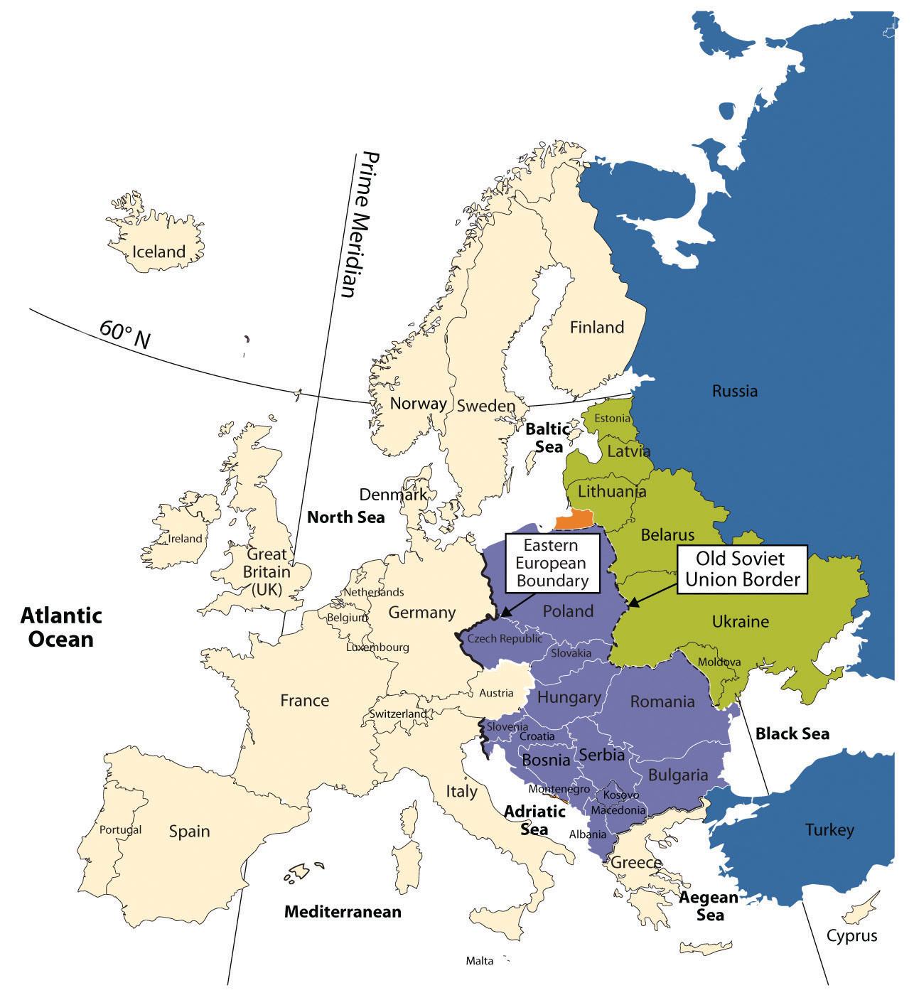After World War II ended in 1945, Europe was divided into Western Europe and Eastern Europe by the Iron CurtainThe physical barrier in the form of walls, barbed wire, or land mines that divided Eastern Europe and Western Europe during the Cold War.. Eastern Europe fell under the influence of the Soviet Union, and the region was separated from the West. When the Soviet Union collapsed in 1991, all the Soviet Republics bordering Eastern Europe declared independence from Russia and united with the rest of Europe. The transition Eastern Europe has experienced in the last few decades has not been easy; however, most of the countries are now looking to Western Europe for trade and economic development. Cooperation continues between Eastern and Western Europe, and the European Union (EU) has emerged as the primary economic and political entity of Europe.
The collapse of Communism and the Soviet Union led to upheaval and transition in the region of Eastern Europe in the 1990s. Each country in the region was under Communist rule. The countries bordering Russia were once part of the Soviet Union, and those countries not part of the Soviet Union were heavily influenced by its dominant position in the region. When the Soviet Union collapsed in 1991, the bordering countries declared independence and began the process of integration into the European community. Moldavia changed its name to Moldova. The countries of Czechoslovakia and Yugoslavia each broke into multiple countries and, because of the diverse ethnic populations, organized around the concept of nation-states. (See Section 2.2.6 "Nation-States and Devolution" for a discussion of nation-states.) Czechoslovakia peacefully agreed to separate into two states: the Czech Republic and the Republic of Slovakia. Yugoslavia was not so fortunate.
Most Eastern European political borders resemble ethnic boundaries. Each of the regions once resembled nation-states. In principle, Romania is set apart for Romanians, Hungary for Hungarians, and so on. Few are true nation-states because of ethnic minorities located within their borders, but the countries held on to their common heritage throughout the Communist era. In most Eastern European countries, cultural forces have brought people together to publicly support the move to unite and hold onto a heritage that is as old as Europe itself.
Governments that had been controlled by Communist dictators or authoritarian leaderships before 1991 were opened up to democratic processes with public elections. With the fall of Communism came economic reforms that shifted countries from central planning to open markets. Under central planning, the governments dictated which products were produced and how many of each were to be produced. The open markets invited private capitalism and western corporate businesses.
Figure 2.30 Reforms in Eastern Europe in the 1990s
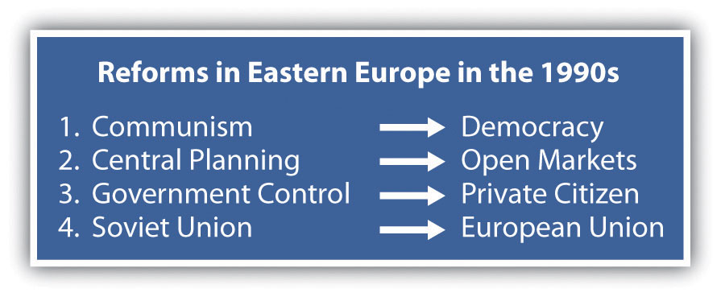The power of the state was transferred from the Communist elite to the private citizen. People could vote for their public officials and could choose businesses and work individually. With the EU looming over the realm, the now-independent countries of Eastern Europe shifted their economic direction away from Moscow and the collapsing Communist state and toward the core industrial countries of Western Europe and the EU.
The stage for the transition from communism to capitalism was further set by Soviet leader Mikhail Gorbachev, who began to liberalize the Soviet Union by allowing multiparty elections and encouraging economic reform and societal openness (concepts known throughout the world by the Russian words perestroika and glasnost, respectively). At the same time, the world watched as the Chinese government violently cracked down on student protests in the Tiananmen Square protests of 1989, which strengthened the revolutionary sentiments and intentions of many people in the Eastern bloc, the former Communist countries of Eastern Europe.
During the Communist period, Hungary enjoyed a higher standard of living than its neighbors. It was likely the marked contrast in daily life between the Communist period and the post-Communist period that influenced the outcome of the 1994 elections, which gave the Hungarian Socialist Party, led by former Communists, an absolute majority in parliament. Many were concerned that Hungary was signaling a wish to return to the past, but instead, all three main political parties joined together to work toward the common goals of continued liberalization of the economy, closer ties with the West, and full EU membership.
Economic reforms have not been easy for Hungary and have resulted in a lower standard of living for most people. The removal of government subsidies, a pillar of Communist rule, led to recession. To avoid massive inflation and attract investment, government fiscal policies had to be conservative to the point of austerity. Hungary's large-scale manufacturing and stable government have aided it through the latest global economic downturn.
An important characteristic of post-Communist Hungary is its desire to become an active member of the global community by joining international organizations. In 1990, Hungary was the first Eastern bloc nation to join the Council of Europe. In 2004, Hungary joined the EU. In addition, Hungary joined the other international organizations, including the Organisation for Economic Co-operation and Development (OECD), the International Monetary Fund (IMF), and the World Trade Organization (WTO). Another endeavor that would not have been possible under the Communist rule was the development of tourism as an important economic sector. Budapest’s reputation as a city of great elegance has helped it become one of the major tourist attractions in Eastern Europe. Major movie studios have also traveled to the city to film.
Figure 2.31 Parliament Building in Budapest, Hungary, Next to the Danube River
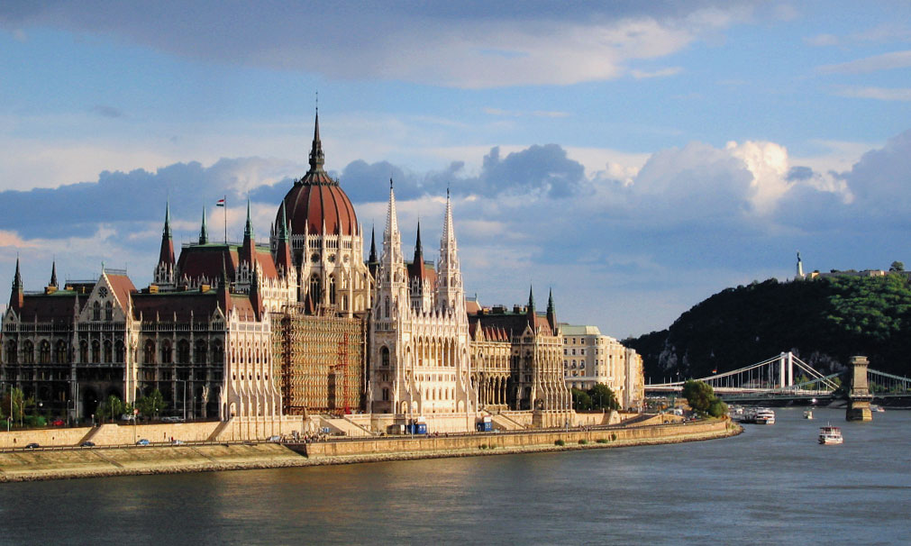Source: Photo courtesy of Ludovic Lepeltier and by Damien Leblois, http://commons.wikimedia.org/wiki/File:Budapest_Parlament_ArM.jpg.
Each country in Eastern Europe has a different story to tell regarding its path from communism to independence. Countries such as the Czech Republic and Hungary were more prepared and better equipped to meet the challenges and were early qualifiers for entry into the EU. Historically, the region occupied by the modern Czech Republic was known as Bohemia and Moravia. The Czech Republic and Slovakia were, until recently, part of the same country: Czechoslovakia, which was created in 1918 from part of the Austro-Hungarian Empire after World War II ended. On January 1, 1993, they became two new independent nations. Slovakia is known officially as the Slovak Republic.
Czechs and Slovaks alike descended from Slavic peoples. The national language of the Czech Republic is Czech, while the official language of Slovakia is Slovakian. Both languages are in the Slavic linguistic family. About 94 percent of the population of the Czech Republic identify themselves as ethnically Czech. The others are Slovenian, Polish, German, Hungarian, and Roma (Gypsy). About 86 percent of the inhabitants of Slovakia self-identify as ethnically Slovakian. Hungarians make up the largest minority population, and about 2 percent of the population identify themselves as Roma.
Under Communist rule, the standard of living was very high in Czechoslovakia. When market reforms began in the Czech Republic and Slovakia, the standard of living declined to some extent. In general, the Czech Republic has more rapidly and effectively transferred state control of industry to private ownership than has Slovakia. Also, Slovakia was hit harder by the move away from defense industries, which had employed many people during the Communist period. Unemployment has consistently been higher in Slovakia. Slovakia is not as industrialized as the Czech Republic but has made strides since independence to provide economic opportunities for its people. Both countries expanded their economic opportunities when they were admitted into the EU in 2004.
The small Baltic states of Latvia, Estonia and Lithuania transitioned away from their old Soviet connections. After independence, they were quick to look toward Western Europe for trade and development. Most Eastern European countries followed this pattern. Latvia, Estonia, and Lithuania received their independence from the Soviet Union in 1991. Russia withdrew its troops from the region in 1994. The North Atlantic Treaty Organization (NATO) and the EU welcomed them as members in 2004. They have transitioned to market economies with democratic governments. The people of Latvia, Estonia, and Lithuania rapidly expanded their economic conditions after independence but have been hard hit by the downturn in the global marketplace in 2008.
Poland has a long-standing history of working to oppose the Communist domination of its country. The SolidarityMovement in Poland, led by Lech Wałęsa, to organize workers during the Cold War. movement in Poland started out as an independent trade union in the 1980s but became a lightning rod for political change in Poland. The Communist Party dominated politics and suppressed any movement to organize labor or the people against the government. The strength of Solidarity became evident by the 1990 election, when Solidarity candidate Lech Wałęsa won the Poland’s presidential election. Solidarity’s victory signified the collapse of the power of the Soviet Union and Communism in Eastern Europe. The country has emerged with democratic government and a thriving capitalist economy.
Since the fall of Communism, Poland left behind its old state-directed economy and transitioned to a market economy, in which businesses are privately owned and run. When the Communists controlled Poland, there was a strong emphasis on heavy industry, and that focus remains alive today. Poland produces cars, buses, helicopters, trains, and heavy military equipment, including tanks and ships. Before the Communists industrialized the Polish economy, it was largely agrarian. Though Poland continues to be one of Europe’s leading agricultural producers, with a wide variety of crops and dairy and meat production, it is unable to meet the food demands of its large population. Poland’s economy is still considered to be under development. Reforms, including privatization, must continue before Poland can adopt the euro, the common EU currency.
Figure 2.32 Royal Castle Square in Warsaw, Poland
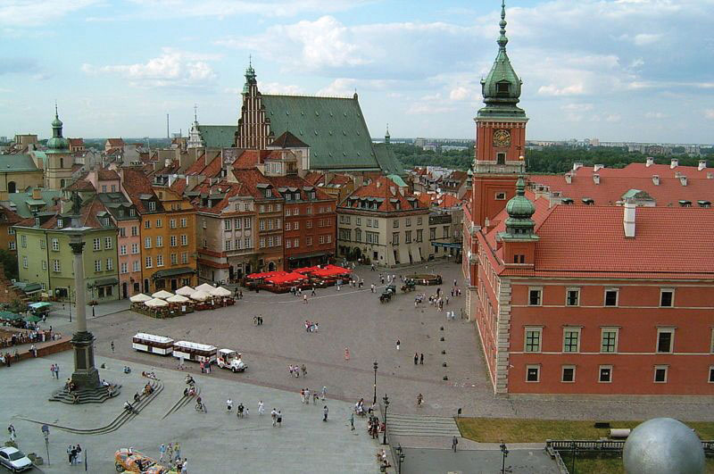Source: Photo courtesy of Shalom Alechem, http://commons.wikimedia.org/wiki/File:Warsaw_-_Royal_Castle_Square.jpg.
Unemployment has at times presented very significant problems for the Polish economy and society. Unemployment skyrocketed to nearly 20 percent in the early 1990s. The situation improved, but unemployment was still at about 14 percent in 2006. By 2010 the situation improved further, and the unemployment rate was around 7 percent. When Poland joined the EU, many people left Poland in search of work. Some of those workers who left have recently returned, as the employment rate and wages are both increasing substantially.
A variety of cultural and social forces provided different levels of civility in the transitions of Eastern Europe. The poor, agrarian economy of the small, landlocked country of Moldova provides few opportunities or advantages to grow its economy and provide a stronger future for its people. As a result, young people earning an education or technical skills immigrate to other countries for opportunities or employment.
In 1991, independence came to the former Soviet Republic of Belarus, but Belarus took a different path from most of the other Eastern bloc countries in that Belarus did not distance itself from its Russian connection. Belarus has consequently experienced authoritarian governments well into the twenty-first century. In this case, Russia and Belarus created a stronger relationship by signing agreements to increase economic integration. Difficulties have hindered implementation of many of these policies. For one thing, the government of Belarus has been slow to move toward democratic reforms. In fact, the president has taken on greater authoritarian powers. Some of the personal freedoms that have been granted in other European countries—freedom of the press, free speech, and the right to peacefully assemble—are still restricted in Belarus. As of 2010, Belarus, Ukraine, and Moldova have not been admitted into the EU. Belarus has indicated that it might join with the Russian Republic and has not even applied for entry into the EU.
With the largest physical area in Europe, Ukraine is slightly larger than France. Its population in 2010 was approximately forty-six million, and 77 percent of the population is ethnically Ukrainian and 17 percent is Russian. Most of the population live in the industrial regions of the southeast or eastern parts of the country. Though the official language is Ukrainian, many Ukrainians still speak Russian. As is the case with neighboring states, the Eastern Orthodox Church dominates the religious and cultural reflections of the arts, literature, and architecture. Christian themes are often reflected in the paintings, books and performances.
The demographic trend in Ukraine follows a pattern of industrialization with smaller family sizes but continues to have a higher death rate than most European countries. The country is now losing about 150,000 people per year. The low birth rates are similar to those of Russia and southern Europe. Poor health and childhood poverty in Ukraine are two of the main issues confirmed by the United Nations (UN). In 2010, Ukraine had a negative population growth rate of −0.62 percent. Fertility rates have been in decline throughout Europe over the past few decades. The average fertility rate in Ukraine is 1.1, one of the world’s lowest; in Europe as a whole, the average is about 1.3. The causes for some of these trends can be attributed to alcoholism, poor diets, smoking, and the lack of medical care. The average life expectancy for an adult male in Ukraine is about sixty-two years. In comparison, the average life expectancy for men in France is about seventy-eight years.
Of the former Soviet Union republics, excluding Russia, Ukraine was far and away the most important economic component, producing about four times the output of the next-ranking Soviet republic. Its fertile black soil generated more than one-fourth of the overall Soviet agricultural output, and its farms provided substantial quantities of meat, milk, grain, and vegetables to other republics. Likewise, its diversified heavy industry supplied steel pipes and raw materials to Russia’s oil and mining industry. Ukraine’s political relationship with Russia has been complicated since the dissolution of the Soviet Union, but Russia still supplies enormous amounts of natural gas and oil to fuel the economy, and Russia’s markets are still highly integrated with those of Ukraine.
Though Ukraine has transitioned from a Soviet republic to a fully independent country, divisive centrifugal forces have made Ukraine’s path to free elections and democratically elected leaders difficult. The country has held political elections, but they have been challenged or tainted with corruption and accusations of fraud. Today, the country has a democratically elected government and is working toward improving its economy and creating stability for its people.
A number of countries of Eastern Europe have fully transitioned from Communist dictatorships to modern, integrated economies. Romania is one of those countries. Romania encompasses an area equivalent to the US state of Minnesota. Its population of 21.5 million people includes two million who live in Bucharest, the capital and largest city of the country. The Carpathian Mountains circle Romania, with the Transylvanian Alps to the south. The Danube River runs across the region and creates a natural border with Bulgaria and Serbia before flowing into the Black Sea. The Romanian forests are some of the largest in Europe, with about half (13 percent of the country) set aside from logging and placed in watershed conservation programs. The integrity of the ecosystems in the Romanian forests provide diverse habitats for plants and animals. Romania claims to have the most European brown bears and about 40 percent of all European wolves living within its borders.
Tourism is growing in Romania. Almost 5 percent of Romania is placed in protected areas, including thirteen national parks and three biosphere reserves, all of which are attractive to tourists. Tourist attractions also include medieval castles as well as historic Transylvanian cities. Rural tourism focuses on folklore and traditions including such sites as Bran Castle, referred to locally as the castle of Dracula, a mythical person patterned after the stories and legends of Vlad III the Impaler.
Figure 2.33 Bran Castle Near Brasov in Transylvania

Source: Photo courtesy of Vints, http://commons.wikimedia.org/wiki/File:Bran_6.JPG.
Romania’s Communist dictator, Nicolae Ceauşescu, ruled from 1965 to 1989. The end of his domination came when the government was overthrown by a revolution. Ceauşescu and his wife were arrested and shot to death. Even after his death, the Communist Party maintained strong ties to the government until the mid-1990s.
The transition to integrate Romania’s economy with that of the greater European economy was delayed because of Romania’s obsolete industrial infrastructure, established during the Communist era. Since joining the EU in 2007, Romania has developed a stronger export market with Western European countries. Investments and consumer confidence have fueled the growth of the domestic economy. Romania has worked through a number of difficult issues in its attempts to provide a stable government and a growing market economy.
The southern Adriatic is home to the small country of Albania. The rugged mountainous country of Albania has a Muslim majority. Poverty, unemployment, and a lack of opportunities to gain wealth have plagued the country. Albania has even received Communist support from China. As a result of the war in Kosovo, Albania suffered a major setback in its progress toward an improved standard of living and integration with the rest of Europe. When stability is established, Albania can progress toward becoming more integrated with the European economy and raise its standard of living for its people. A parliamentary democracy has been installed since the Communist era, and foreign investments have aided in developing updated transportation and power grids.
Located in the crossroads of the continents, Bulgaria has a major trans-European corridor running through its territory that connects all the way to Asia. The country is home to diverse landscapes, which include the sunny Black Sea coast and the higher elevations of the Balkan Mountains, which reach an elevation of 9,596 feet. The Danube River flows across the border with Bulgaria on its way to the Black Sea. About one-third of the country consists of plains, which provide for extensive agricultural activity. Ore and minerals can also be found in Albania, which has allowed the country to gain wealth.
Upon declaring independence from Russia, Bulgaria held multiparty elections. Its economy is emerging, but the transition to a capitalist system has not been without the difficulties of unemployment, inflation, and corruption. Bulgaria became a member of NATO in 2004 and was accepted for EU membership in 2007. The transition to a free market economy is still in progress, with mining, industry, and agriculture as the main economic activities. Tourism is an emerging segment of the economy that has been gaining international attention in recent years. The country has a milder climate than the northern states of Eastern Europe and has been marketing itself as a major tourist destination. Main points of interest include historical monasteries, coastal resorts on the Black Sea, and the capital city of Sofia.
Here is an example of cultural differences between the United States and Bulgaria. This story is from Elizabeth Kelly, a US Peace Corps volunteer working in Bulgaria (2003–5).
“I’ll have coffee,” I tell the waitress at a cafe during my first week in Bulgaria. She shakes her head from side to side. “OK, tea,” I say, thinking that maybe there’s something wrong with the coffee machine. Again, she shakes her head. “Um. cola?” Once more, she shakes her head. By now, she’s looking at me like I’m crazy, and I’m totally confused. Then I remember: A shake of the head by a Bulgarian means “yes,” and a nod—what the rest of the world does for “yes”—means “no.”
Early on, when I communicated with Bulgarians, it seemed like my head was moving in ways my brain hadn’t told it to. Sometimes I wanted to grab my ears and use them as controls. Learning a language with a completely different alphabet was challenging enough without trying to figure out whether to nod or shake.
When I began teaching, all this head bobbing made communication in the classroom interesting. Although I had made sure my students knew about this cultural difference on the first day of school, we all frequently forgot what we were doing. My students would answer a question correctly or say something really great, and I’d nod. A second later, they were trying to change their answer, since they thought the nod meant they had been wrong. But the confusion went both ways. Sometimes I’d ask a student a yes-or-no question and he or she would answer with a nod or a shake, without saying anything. Not remembering the difference, we’d have to go through the motions several times before I understood. Frequently I found myself saying, “Da or ne—just tell me one or the other!”
I also had to deal with confused colleagues who couldn’t figure out why I kept nodding my head while they talked, as if I were arguing with them. In truth, I was just trying to show that I understood and was following along with the story. And then there was the even greater problem of how to act with Bulgarians who spoke English and were aware of the nodding–shaking problem. Was I supposed to nod or shake for “yes” when I was speaking English with them? And what was I supposed to do when we were speaking Bulgarian? What if we were in a situation where both languages were being spoken? To make matters even more complicated, after going a couple of weeks without any contact with other Americans, we’d finally get together and I’d find myself shaking when I should have been nodding. My head was spinning!
Tuning in to how the people around me communicate has brought me closer to the people and the culture of Bulgaria. And whenever we slip up and forget to control our heads, the laughter that follows brings us together. Luckily, a smile is a smile the world over.
Source: Peace Corps Coverdell World Wise Schools program. Used by permission.
The name Yugoslavia, applied to the region along the Adriatic in 1929, means Land of the South Slavs. From 1918 to 1929, the region had been called the Kingdom of Serbs, Croats, and Slovenes. Non-Slavic populations surround Yugoslavia. The region’s core is mountainous. The Dinaric Alps, with the highest peak at just below nine thousand feet in elevation, run through the center of the Balkan Peninsula. The rugged mountains separate and isolate groups of Slavic people who, over time, have formed separate identities and consider themselves different from those on the other sides of the mountain ridges. Distinct subethnic divisions developed into the Slovenes, Macedonians, Bosnians, Montenegrins, Croats, and Serbs, with various additional groups. These differences led to conflict, division, and war when the breakup of former Yugoslavia began.
World War I started in the city of Sarajevo, Bosnia, when a Serb advocate assassinated Archduke Ferdinand of the Austria-Hungarian Empire. In the next conflict, World War II, there was also divisiveness within Yugoslavia: Croatia sided with Nazi Germany, but Serbia was an ally with the Communist Soviet Union. The region of Bosnia, with a Muslim majority, faced religious opposition from its mainly Christian neighbors. A group headed by Marshal Tito (a.k.a. Josip Broz) led Yugoslavia after World War II ended in 1945. Tito created a Communist state that attempted to retain its own brand of neutrality between the Warsaw Pact nations led by the Soviet Union and the NATO nations of the West.
Tito was a centripetal force for the region of Yugoslavia. For over forty years, he held the many ethnic Slavic groups together under what he called Brotherhood and Unity, which was actually the threat of brute military force. It appears to have been effective. The 1984 Winter Olympics were held in Sarajevo as witness to the progress and unity of Tito’s Yugoslavia. At the same time, Yugoslavia started manufacturing a model of automobiles called the Yugo. While the Yugo was not in the same league as high-end European luxury cars, the ability to make and purchase automobiles was a testimony to the rising industrial level of the Yugoslav economy. This progressive trend, unfortunately, was not to last.
Figure 2.34 The Balkan Peninsula and Former Yugoslavia
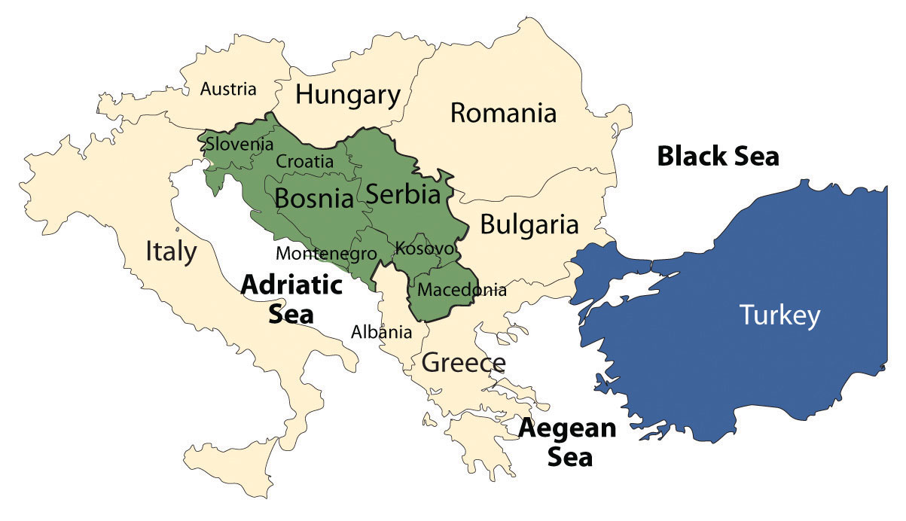Macedonia is officially called the Former Yugoslav Republic of Macedonia (FYROM) because of a name conflict with Greece. Albania is an independent country and was never a part of Yugoslavia.
Table 2.3 Status of States in Former Yugoslavia
| Country | Year of Independence | Religion | Population | Size (Sq. Mi.) | World War II Ally |
|---|---|---|---|---|---|
| Slovenia | 1991 | Catholic, 57%; Muslim, 2.4%;Orthodox, 2.3% | 2 million | 7,827 (about the size of Vermont) | — |
| Croatia | 1991 | Catholic, 88%; Orthodox, 4.4%; Muslim, 1.3% | 4.5 million | 21,831 (about the size of West Virginia) | Nazi Germany |
| Bosnia | 1991 | Muslim, 40%; Orthodox, 31%; Catholic, 15% | 4 million | 19,741 (about the size of West Virginia) | — |
| Serbia | 2006 | Orthodox, 85%; Muslim, 4%; Other, 10% | 10 million | 29,915 (about the size of South Carolina) | Soviet Union |
| Kosovo* | 2008 | Muslim, 90%; Orthodox, 9% | 1.8 million | 4,203 (about the size of Connecticut) | — |
| Macedonia | 1991 | Orthodox, 67%; Muslim, 30% | 2.1 million | 9,781 (about the size of Vermont) | — |
| Montenegro | 2006 | Orthodox, 74%; Muslim, 18%; Catholic, 3.5% | 678,177 | 5,423 (about the size of Connecticut) | — |
| *Note: As of 2008, Kosovo was not accepted by the UN. Its status is pending. | |||||
Tito died in 1980. The unity that had helped hold the country together began to break down in the early 1990s with the Soviet Union’s collapse. With the dual loss of the Soviet Union and Tito’s strong policies as centripetal forces, the power struggle for dominance among the various ethnic groups began.
In 1991, Slobodan Miloševik began pushing for the nationalistic goal of uniting all the ethnic Serbs that lived in the various parts of Yugoslavia into a Greater Serbia. The efforts were not approved or supported by the UN, which rejected Yugoslavia for membership in 1992. At that time, Kosovo and Montenegro were part of the Serb state. Miloševik first sent the Yugoslav military to Kosovo to take control from the majority Albanian population and secure the region for Greater Serbia. Fearing war, Slovenia, Croatia, and Macedonia declared independence in 1991. Yugoslavia was breaking up.
Miloševik then moved into Croatia to secure Serb areas for his Greater Serbia. After a brief but bitter war between Serbia and Croatia, the UN stepped in to halt the conflict. The first signs of ethnic cleansingThe forced removal of one people by another through armed force. were reported during this conflict. Serb military units would roll into a town or village and claim it as a Serb-only location. The Croats and any other people living there were forced to leave. Reports of assaults on women and the systematic killing of men of fighting age were documented. Sadly, ethnic cleansing began to be reported on all sides of the war. The bitter hatred between Croats and Serbs, which had been handed down from the World War II era, surfaced for a new generation. After the UN stopped Miloševik in Croatia, he turned to the Serb areas of Bosnia to expand his Greater Serbia. Bosnia immediately declared independence and was approved by the UN in 1992.
The bitter battle for Bosnia extended from 1992 to 1995, and Europe wondered if the Bosnian war would develop into World War III. The region of Bosnia included people of Serb, Croat, and Bosnian ethnic backgrounds. Bosnia broke up along ethnic lines. The Serb group supported Greater Serbia; the Bosnian group wanted independence. In March 1994, the Croat group signed an agreement joining with the Bosnian group against the Serbs. In 1995, with strong pressure from Europe and the United States, the warring groups signed a peace agreement known as the Dayton AccordAn agreement reached by leaders of former Yugoslavia to end the war in Bosnia., named after a meeting in Dayton, Ohio. The Dayton Accord accepted Bosnia’s borders and supported the creation of a unity government that was democratic and included the multiethnic groups. The country of Bosnia was divided into three parts: Serb, Croat, and Bosnian.
Figure 2.35 Street Checkpoint in Kosovo in 2004
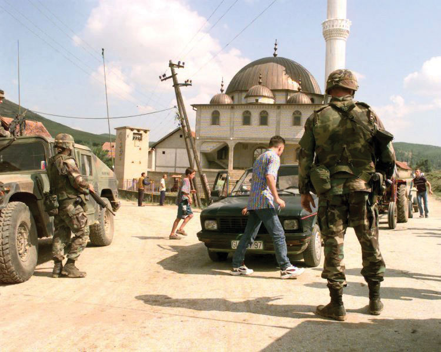Source: Photo courtesy of US Military.
Military forces continue to monitor and secure the regions of Bosnia. Portions of Bosnia under Serb control have declared themselves the Republic of Srpska and have attempted to create their own nation-state. The remaining territory of Bosnia (51 percent) consists of a joint Bosnian/Croat federation. Both regions have sublevel governments within the formal country of Bosnia and Herzegovina. Herzegovina is a small region extending from the city of Mostar to the southern border with Montenegro. In June of 2006, the region of Montenegro declared itself independent of Serbia. Montenegro uses the euro as its currency and has applied for WTO membership. Montenegro has privatized its main industries and is soliciting a tourism industry.
Yugoslavia, under the leadership of President Miloševik, sought to ensure that Kosovo would never leave the umbrella of Greater Serbia. The 1.8 million Albanian Muslims who lived in Kosovo constituted 90 percent of the population by 1989. They did not want to live under Serb control. Serbia claimed that Kosovo was the heart of the Serb Orthodox Church and the cradle of the medieval Serbian Empire. The historic battles against the Islamic Turkish Ottoman Empire in Kosovo have been memorialized in Serb tradition and history.
The main opposition to the Serb power structure in Kosovo in the early 1990s was the Kosovo Liberation Army (KLA). Many in the KLA wanted an independent Kosovo and an alliance with Albania. In 1998, Miloševik sent troops into areas controlled by the KLA. The civil war in Kosovo between Serbs and Albanian Muslims was devastating the region and creating thousands of refugees. The tension, hatred, and massacres by both forces further complicated the peace process. In March of 1999, NATO implemented a unified mission, called Operation Allied Force, to force Miloševik to discontinue the ethnic cleansing campaign and end the violence in Kosovo.
In June of 1999, Miloševik yielded to a peace agreement that brought Kosovo under the auspices of the UN and NATO forces, removed the Serb military, and allowed for the safe return of over eight hundred thousand refugees from Albania, Montenegro, and Macedonia. Miloševik lost his bid for the presidency in the elections of 2000, was arrested for crimes against humanity in 2001, and was transferred to the International Criminal Tribunal in The Hague, the Netherlands. The charges brought against him included ethnic cleansing and torture. He died in 2006 while in custody before the trial ended.
Figure 2.36
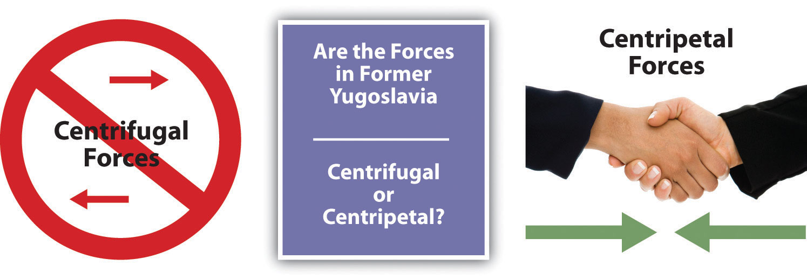The wars in former Yugoslavia were fueled by strong cultural forces.
NATO forces continue to be stationed in Kosovo to keep the peace and work toward restoring order. After much negotiation between the UN and regional entities, the Kosovo Assembly declared its independence from Serbia in 2008. Serb officials overwhelmingly opposed Kosovo’s independence, as they had in 1991. Kosovo’s status is now pending in the UN.
Kosovo and the independent republics of former Yugoslavia provide an excellent study in the dynamics of ethnicity, culture, and political geography. The lessons learned from this region could be applied to many other areas of the world suffering similar conflicts, such as Chechnya, Iraq, Afghanistan, Rwanda, Congo/Zaire, or East Timor. Former Yugoslavia represents an example of how divisive centrifugal and devolutionary forces can lead to nationalism and eventually to war. The drive toward a nation-state has fueled nationalism and conflict in the Balkans. The civil wars within former Yugoslavia have cost thousands of lives and destroyed an infrastructure that had taken decades to build. Geographers have called Eastern Europe a shatterbeltRegion with political fracturing and splintering such as Eastern Europe. because of the conflicts and divisions that have occurred there.
In spite of the problems with the transition in Eastern Europe, the region has nonetheless seen enormous economic gains. Even Slovenia, once part of former Yugoslavia, has rebounded with strong economic growth. Many of the progressive Eastern European countries have been accepted into the EU. The map of the EU includes many of the developing Eastern bloc countries. Eastern Europe has experienced many transitions throughout its history. The transition from communism to capitalism is only one part of the geography and history of Eastern Europe.
Identify the following key places on a map: